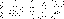
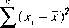
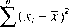

This Vocabulary has been prepared simultaneously in Engiish and French by a joint working group consisting of experts appointed by:
BIPM International Bureau of Weights and Measures
IEC International Electrotechnioal Commission IFCC lnrernational Federation of Clinioal
Chemistry
ISO International 0rganization for Standardization
IUPAC International Union of Pure and Applied Chemistry
IUPAP international Union of Pure and Applied Physics
OML international 0rganization of Legal Metrology
The Vocabulary is published in the nome of these organizations.
Ce Vocabulaire a été préparé simultanément en anglais et en français par un groupe mixte composé d'experts désignés par:
BIPM Bureau international des poids et mesures CEi Commission électrotechnique
internationale
FICC Fédération internationale de ohimie clinique
:so Organisation internaîionale de normalisation
OML 0rganisa11on internationale de métrologie légale
UICPA Union internationale de chimie pure et appliquée
UIPPA Union internationale de physique pure et appliquée
Le Vocabulaire est publié au nom de ces organisations.
International Vocabulary of Basic and General Terms in Metrology
Vocabulaire international des termes fondamentaux et généraux de métrologie
Second edition/Deuxième édition, 1993 ISBN 92-67-01075-1
© International Organization for Standardization 1993
Printed in Switzerland/imprimé en Suisse
CONTENTS
Foreword (to the first edition). . . . . . . . . . . . . . . . . 4
Foreword (to the second edition) . . . . . . . . . . . . 7
Explanatory notes ... .... .... ............. 8
Ouantities and units . . . . . . . . . . .. . . . . . .. 11
SOMMAIRE
Avant-propos (à la première édition)......... 4
Avant-propos (à la deuxième édition)........ 7
Notes explicatives . . . . . .. . . . . . .. . . . . . . . . . . . . . . . . 8
Grandeurs et unités....... .... ... .. .. .. 11
Measurements ..........................
Measurement results ...............
Measuring instruments ............. .
Charactenstics of measuring instruments .............................
Measurement standards, etalons .... .
19 2 Mesurages .......... . 19
23 3 Résultats de mesure ................... 23
29 4 Instruments de mesure ... . 29
5 Caractéristiques des instruments de
37 mesure .. 37
45 6 Etalons ... 45
Bibliography 50
English index 51
French index .. . . . . . . . . . . . . . . . . . . . . . . . . . . . . . 55
Bibliographie 50
Index anglais ................ 51
Index français ............... 55
Meuo,ogy 1993 3
FOREWORD
to the first edition
Ali branches of science and technology need to choose their vocabulary with care. Each term must have the same meaning for all of its users; it must therefore at the same time express a well-defined concept and not be in conflict with everyday language. This applies particularly in metrology, but with an additional difficulty: every measurement is tainted by imperfectly known errors, so that the significance which one can give to the measurement must take account of this uncertainty. We must therefore express with precision that self-same impreciseness.
ln order to try and resolve this problem at an international level, the ISO Metrology Group decided to propose to the four main inter-national organizations which are concerned with metrology (BIPM, IEC, ISO and OIML) that there should be a joint action to produce a common terminology. To this end, a task group was set up to co-ordinate the preparation of a vocabulary of general terms used in metrology. The task group made great use of the existing IEC and OIML vocabularies as their starting point and produced a draft vocabulary which was widely circulated by the four participating organizations Many comments were received, occupying several hundreds of pages. They were ail examined at a series of meetings of an international joint working group, composed of experts appointed by each of the four organ-izations. Sorne of the comments gave rise to long, and at times impass1oned, discussions. This Vocabulary is the result of this 101nt work. ISO has agreed to publish it in the name of the four organizations.
The working group made every effort to take account of other publications dealing with the same subject; some of these publications are cited in the bibiiography. The work1ng group
AVANT-PROPOS
à la première édition
Dans toutes les branches de la science et de la technique, le vocabulaire doit être choisi avec soin. Chaque terme doit avoir la même signi-fication pour tous les utilisateurs; il doit donc exprimer un concept bien défini, sans entrer en conflit avec le langage usuel. Cela s'applique particulièrement en métrologie, avec une diffi-culté supplémentaire: toute mesure étant enta-chée d'erreurs imparfaitement connues, la signi-fication qu'on peut lui attacher doit inclure cette incertitude. Il nous faut donc exprimer avec précision l'imprécision elle-même.
Pour tenter de resoudre ce problème au niveau international, le Groupe Métrologie de I'1SO a décidé de proposer aux quatre princi-pales organisations internationales qui s'occu-pent de métrologie (BIPM, CEi, ISO, OIML) une action concertée pour élaborer une terminologie commune. Dans ce but, un groupe d'étude a été constitué pour coordonner la préparation d'un vocabulaire des termes généraux utilisés en métrologie. En s'inspirant pour une large part des vocabulaires existants de la CEi et de l'OIML, ce groupe d'étude a préparé un proJet de vocabulaire qui a été largement distribué au sein des quatre organisations participantes. De nombreux commentaires ont été reçus, couvrant plusieurs centaines de pages. Ils ont tous été examinés au cours de plusieurs réunions d'un groupe de travail mixte. interna-tional. composé d'experts désignés par chacune des quatre organisations. Certains de ces commentaires ont donné lieu à des discussions prolongées. parfois même passionnées. Le présent Vocabulaire est le fruit de ce travail conjoint. L'ISO a accepté d'en assurer la publication. au nom des quatre organisations.
Le groupe de travail s'est efforcé de tenir le plus grand compte des autres publications touchant au même suJet, publications dont quelques-unes sont citées dans la bibliographie.
4 Mero.ogy î 993
has also applied itself to deal not only with the most refined measurements but also with very ordinary measurements, where only modest performance is required. The concepts are the same in both cases, only their relative import-ance changes according to the application. An attempt was made to group the terms according to their relationships in order to facilitate consulting the Vocabulary. The grouping which has been chosen in no way implies a priority or importance of one term over another.
The Vocabulary has had to restrain its ambitions in the realms of error and uncertainty. These concepts are themselves the subject of studies and controversies. The working group has therefore taken a very conservative attitude in order not to encourage the use of incorrect terms. They have left aside the language of statistics, which has often been mis-used in the field of measurement. They have retained the word "error'', hallowed by use. even though it is often used incorrectly. Error 1s a well-defined concept. Ali measurements are tainted by error. But this error is generally not known. lts sign is often ignored and it is often difficult even to g1ve it an order of magnitude. lt is for this reason that the word "uncertainty" is coming mcreasingly into use to designate "the est1mate of the possible error, of unknown sign'·. Nonetheless, one must be careful not to apply indiscrimmately the ianguage of statistics to the concept of uncertainty, as the estimation of an uncertainty 1s rarely a matter of rigorous statistical analys1s.
The work1ng group has 1ntent1onally refrained from re-defining ail of the terms used 1n the definitions themselves. Thus, 1n order to define a system of units, one refers to a system of physical quantit1es. The definition of physical quantities and their organization mto a system fall largely outside the realm of the competence of metrologists. These matters are dealt w1th 1n other publications produced by, for example, the International Union of Pure and Appiied Phys,cs (IUPAP) and by ISO.
Matters of language do not tall within the competence of the International Bureau of Weights and Measures (BIPM) lts task 1s, 1n essence, to provide the experimental bases of the International System of Units (Si). However, many years of experience in this fieid can be useful in the worklng out of a Vocabulary of Metrology. For this reason the BIPM accepted
Il s'est aussi attaché à couvrir aussi bien les mesures les plus raffinées que les mesures les plus courantes, auxquelles on ne demande que des performances modestes. Les concepts sont les mêmes dans les deux cas. seule leur importance relative change suivant les appli-cations. Afin de faciliter la consultation du Vocabulaire, on a essayé de classer les termes par affinités. Le classement choisi ne prétend en aucune façon attribuer une priorité ou une importance particulière à certains termes plutôt qu'à d'autres.
Dans le domaine des erreurs et des incerti-tudes, ce Vocabulaire a dû limiter ses ambitions. Les concepts eux-mêmes font encore l'objet d'études et de controverses. Le groupe de travail s'est donc tenu à une attitude très réservée, pour ne pas encourager l'usage de termes impropres. On a par exemple laissé de côté le langage des statistiques, souvent utilisé abusivement dans le domaine de la mesure. On a conservé le mot ((erreur>,, consacré par l'usage, bien qu'il soit souvent utilisé à tort. L'erreur correspond à un concept bien défini. Toute mesure est bien entachée d'erreur. Mais cette erreur est généralement inconnue. On ignore son signe, et on a bien du mal à lui attribuer un ordre de grandeur. C'est pourquoi l'usage du mot «incertitude)) tend à se répandre pour caractériser ((l'estimation de l'erreur pos-sible, de signe inconnu)). On doit cependant se garder d'appliquer inconsidérément le langage de la statistique, car l'estimation de l'incertitude relève rarement d'une véritable étude statis-tique.
Le groupe de travail s'est volontairement abstenu de redéfinir tous les termes utilisés dans les définitions elles-mêmes. Ainsi, pour définir un système d'unités, on se reporte à un système de grandeurs physiques La définition des grandeurs physiques et leur organisation en système débordent largement du domaine de compétence des métrologistes. Ces questions sont traitées dans d'autres publications, émanant par exemple de l'Union internationale de physique pure et appliquée (UIPPA) ou de
!'ISO.
Les questions de langage ne relèvent pas de la compétence du Bureau international des poids et mesures (BIPM) Sa mission essentielle est de fournir les bases expérimentales du Système international d'unités (S!). Cependant, une iongue expérience dans ce domaine pouvait être utile dans l'élaboration d'un Vocabulaire de métrologie. C'est pourquoi ie B!PM a accepté de
an involvement in the work. This is also doubtless the reason why I have had the honour of being co-opted by the experts of the other three organizations to act as chairman of the meetings of the working group. This has enabled me to appreciate the scale of the effort which ail the participants have put into the work of clarifying the concepts and finding the "mots justes".
Whether concerned with the choice of the terms themselves, their def initions, notes or examples, in French and in English, the working group has striven to find a consensus. Every-thing that was debatable has been omitted. One can therefore be certain that the contents of this document everywhere represent, at the least, an acceptable compromise for the great majority of the participants.
Without doubt, imperfections still exist. They will need to be corrected in the future. 1 hope, however, that these imperfections will not place the Vocabulary in conflict with elementary logic or with the actual state of our knowledge on the subject of metrology.
lt is necessary to thank all those vvho have participated in this work, at first hand and from afar. There are too many of them to mention them all, but I take the opportunity of mention-ing the essential raie which has been played by Peter M. Clifford. He has taken charge of ail the practical tasks of the Secretanat of the working group, from the editing of the first draft through to the final text. The success that I wish for this Vocabulary will, in major part, be due to him.
Pierre Giacomo
Chairman of the joint working group Director
International Bureau of Weights and Measures (BIPM)
participer à cette entreprise. C'est sans doute aussi pourquoi j'ai eu l'honneur d'être coopté par les experts des trois autres organisations pour présider les séances de travail. Cela m'a permis d'apprécier l'effort de tous les parti-cipants pour clarifier les concepts et pour trouver les mots justes.
Qu'il s'agisse du choix des termes eux-mêmes, des définitions, des notes ou des exemples, en français et en anglais, le groupe de travail s'est efforcé de trouver un consensus. Tout ce qui était trop discutable a été supprimé. On peut ainsi être sûr que le contenu de ce document représente touiours, au moins, un compromis acceptable pour la très large majorité des participants.
Des imperfections subsistent sans aucun doute. Il faudra y remédier dans l'avenir. J'espère cependant qu'aucune de ces imperfections ne mettra ce Vocabulaire en opposition avec la logique élémentaire ou avec l'état actuel de nos connaissances en matière de métrologie.
Il faut remercier tous ceux qui ont participé à cette tâche, de près ou de loin. Ils sont trop nombreux pour être tous cités, mais Je tiens à mentionner le rôle essentiel qu'a joué Peter M. Clifford. Il a pris en charge toutes les tâches matérielles de secretariat du groupe de travail, depuis la rédaction de la première ébauche jusqu'à celle du texte final. Le succès que je souhaite à ce Vocabulaire lui sera dû pour la plus grande part.
Pierre Giacomo
Président du groupe de travail mixte Directeur du
Bureau international des poids et mesures lBIPM)
FOREWORD
to the second edition
The first edition of this Vocabulary was widely distributed. As foreseen in its Foreword, some 1mperfect1ons have been found which have necessitated corrections, issued in 1987 in the form of an Amendment. Most of the imperfections were of language rather than intended meaning, but it has also been necessary to remove some anomalies, ambi-guities and circularities. Furthermore, it became apparent that the Vocabulary did not take sufficient account of the needs of chemistry and related fields
A Working Group consisting of experts appointed by BIPM, IEC, IFCC, ISO, IUPAC, IUPAP and OIML has therefore undertaken the revision of the first edition, based on the large number of comments received.
As in the first edition, the emphasis has remained on basic and general concepts con-cerned with metrology and with establishing generally agreed terms together with descrip-tions of the corresponding concepts which they express.
lt is hoped that this Vocabulary will stimulate dialogue between the experts of vanous specialized disciplines of science and tech-nology, thus contributing to harmonized Inter-disciplinary terminology.
Comments, suggestions and requests for clarification will be welcome. They should be addressed to:
The Secretary of ISO/TAG 4 ISO Central Secretariat
1, rue de Varembé CH-1211 GENEVA 20
Switzerland
Pierre Giacorno
Cha1rman of the ioint group Director emeritus
International Bureau of and Measures
(81Pl\t1)
AVANT-PROPOS
à la deuxième édition
La première édition de ce Vocabulaire a été largement distribuée. Comme son Avant-propos le laissait entrevoir, diverses imperfections y ont été trouvées qui ont donné lieu à des correc-tions diffusées sous la forme d'un Amendement en 1987. La plupart des imperfections relevaient de la forme plutôt que du fond, mais il a aussi fallu remédier à quelques anomalies, ambiguïtés ou circularités. De plus, il est apparu que ce Vocabulaire ne tenait pas suffisamment compte des besoins de la chimie et des disciplines qui lui sont apparentées.
En conséquence, un Groupe de travail composé d'experts désignés par le BIPM, la CEi, la FICC, l'ISO, l'OIML, l'UICPA et l'UIPPA a
entrepris la révision de la première édition en partant des nombreux commentaires reçus.
Comme dans la première édition, l'accent a été mis une nouvelle fois sur les concepts fondamentaux et généraux relatifs à la métro-logie, l'objectif étant d'établir des termes large-ment admis, accompagnés d'une description des concepts qu'ils expriment.
Il faut espérer que ce Vocabulaire suscitera des échanges de vues entre les experts des diverses disciplines scientifiques et techniques spécialisées, contribuant ainsi à établir une terminologie harmonisée, commune à toutes les disciplines.
Commentaires, suggestions et demandes de clarification sont les bienvenus. Ils doivent être adressés à:
Secrétaire de l'ISO/TAG 4 Secrétariat central de l'ISO 1, rue de Varembé
CH-1211 GENÈVE 20
Suisse
Pierre Giacomo
Président du groupe de travail mixte Directeur honoraire du
Bureau international des poids et mesures (BIP!\11)
EXPLANATORY NOTES NOTES EXPLICATIVES
The reference numbers are generally the same as in the 1984 edit1on. Where there has been a change, the earlier number is given in parentheses below the new number. Terms that are new in this edition are indicated by a hyphen in parentheses "(-)" below the reference number.
The use of parentheses "(.. ) " around 'Nards of some terms means that these words may be omitted if it is unlikely that th1s will cause confusion.
The French word "mesure" has several meanings in everyday French language. For this reason, it is not used in this vocabulary without further qualification. lt is for the same reason that the French word "mesurage" has been introduced to describe the act of measurement. Nevertheless, the French word mesure occurs many times in forming terms in this Vocabulary, following current usage, and without ambiguity. Examples are: instrument de mesure, appareil de mesure, unité de mesure, méthode de mesure. This does not mean that the use of the French word "mesurage" in place of "mesure" in such terms is not permissible when advantageous.
Sorne terms in notes are printed in bo!d face type. This means that they appear in the Index.
As a matter of convenIence and to save space, the terms given in this Vocabulary are nouns. Nevertheless, other related parts of speech may be used freely wherever the meaning Is clear and is plainly associated with that of the defined noun; this practIce Is recommended so that texts on metrolog1cal matters do not become overburdened with
En général, les numéros de référence sont les mêmes que ceux de l'édition de 1984. Lorsque l'un d'eux diffère de celui de la première édition. le numéro antérieur figure entre parenthèses au-dessous du nouveau numéro. Lorsque le terme lui-même est nouveau, cela est indiqué par un tiret placé entre parenthèses « (-} n en dessous du nouveau numéro.
L'emploi de parenthèses "( )1) pour les mots de certains termes signifie que ces mots peuvent être omis lorsqu'on ne craint pas d'ambigu1te.
Le mot « mesure >1 a, dans la langue française courante, plusieurs significations Aussi n'est-il pas employé seul dans le présent Vocabulaire. C'est également la raison pour laquelle le mot ((mesurage)) a été 1ntrodu1t pour qualifier l'action de mesurer. Le mot ((mesure)) intervient cependant à de nombreuses reprises pour former des termes de ce Vocabulaire, suivant en cela l'usage courant et sans ambigu1'té. On peut citer, par exemple: instrument de mesure, appareil de mesure, unité de mesure, méthode de mesure. Cela ne signifie pas que l'utilisation du mot ((mesurage)) au lieu de «mesure)) pour ces termes ne soit pas admissible si l'on trouve quelque avantage à le faire.
Certains termes dans les notes sont impri-més en caractères gras. Cela signifie qu'ils appa-raissent dans l'index.
Par raison de commodité et de brièveté, les termes donnés dans ce Vocabulaire sont essen-tiellement des noms. Cependant, il est loisible d'utiliser d'autres formes du discours lorsque ieur sens est clair et nettement associé à celui du nom donné dans ce Vocabulaire; parfois le recours à cette pratique est même recommandé car les textes traitant de métrologie deviendraient
esoteric nouns and depleted of meaningful verbs. For example, the Vocabulary defines the nouns "measurement", "calibration" and "reproducibility" but, quite rightly, metrologists often use the verb "to measure" rather than the cumbersome phrase "to carry out a measu-rement" and "calibrate" in preference to "effect a calibration" or "reproducible" instead of "provide a given reproducibility".
horriblement lourds si l'on s'interdisait d'utiliser les verbes appropriés au profit de noms ésotériques. Par exemple, le Vocabulaire définit les noms «mesurage)), «étalonnage)) et «repro-ductibilité)) mais les métrologistes utilisent souvent, et à juste titre, le verbe «mesurer» plutôt que la tournure plus lourde «effectuer un mesurage)), ou «étalonner» plutôt qu'«effectuer un étalonnage», ou «reproductible» plutôt que
«présentant une certaine reproductibilité».
MetrOiOQY 9
QUANTITIES AND UNITS
1 GRANDEURS
;
ET UNITES
1.1
(measurable) quantity
attribute of a phenomenon, body or substance that may be distinguished qualitatively and determined quantitatively
NOTES
The term quantity may refer to a quantity 1n a general sense [see example a) l or to a particular quantity lsee example b)I.
EXAMPLES
quantities in a general sense: length, ttme, mass. temperature, electncal resIstance. amount-of-substance concentration;
particular quantit1es:
length of a given rod
electrical resistance of a gIven specimen of wIre
amount-of-substance concentration of ethanol 1n a given sample of wine.
Ouantities that can be placed in order of magnitude relative to one another are called quantities of the same kind.
Ouantities of the same kind may be grouped together into categories of quantities, for exampie:
work, heat, energy
thickness, circumference, wavelength.
Symbols for quantities are gIven In ISO 31.
1.2
(-)
system of quantities
set of quantities, in the general sense, among which defined relationships ex1st
1.1
grandeur {mesurable), f
attribut d'un phénomène, d'un corps ou d'une substance, qui est susceptible d'être distingué qualitativement et déterminé quantitativement
NOTES
Le terme «grandeur» peut se rapporter à une grandeur dans un sens général !voir exemple a)) ou à une grandeur particulière [voir exemple b)i.
EXEMPLES
grandeurs dans un sens général: longueur, temps, masse. température, résistance électrique, concen-tration en quantité de matière;
grandeurs particulières
longueur d'une tige donnée
résistance électrique d'un échantillon donné de fil
concentration en quantité de matière d'étha-nol dans un echantillon donné de v1n.
Les grandeurs qui peuvent être classées les unes par rapport aux autres en ordre croissant (ou décroissant) sont appelées grandeurs de même nature.
Les grandeurs de même nature peuvent être groupées ensemble en catégories de grandeurs, par exemple:
travail, chaleur. energIe;
épaisseur. circonférence, longueur d'onde.
Des symboles de grandeurs sont donnés dans l'ISO 31
1.2
(-)
système de grandeurs, m
ensemble de grandeurs. dans le sens général, entre lesquelles 11 existe des relations définies
1.3
(1.02)
base quantity
one of the quantities that, in a system of quant1t1es, are conventionally accepted as functionally independent of one another
EXAMPLE the quantities length, mass and t,me are generally taken to be base quant,ties in the field of mechanics.
NOTE The base quantities corresponding to the base units of the International System of Units {SI) are gIven in the NOTE to 1.12.
1.4
( 1.03)
derived quantity
quantity defined, in a system of quantities, as a function of base quantities of that system
EXAMPLE in a system having base quantities length, mass and time, velocity Is a derived quantIty defined as: length divided by time.
1.5
(1.04)
dimension of a quantity
expression that represents a quantity of a system of quantities as the product of powers of factors that represent the base quantities of the system
EXAMPLES
in a system having base quantities length, mass and time, whose dimensions are denoted by L, M and T respectively, LMT-2 is the dimension of force;
in the same system of quantities, ML-3 is the dimension of mass concentration as well as of mass density.
NOTES
The factors that represent the base quantities are called "dimensions" of these base quantities.
2 For details of the relevant aigebra, see ISO 31-0.
1.3
( 1.02)
grandeur de base, f
l'une des grandeurs qui, dans un système de grandeurs, sont admises par convention comme étant fonctionnellement indépendantes les unes des autres
EXEMPLE les grandeurs longueur, masse et temps sont généralement prises comme grandeurs de base dans le domaine de la mécanique.
NOTE Les grandeurs de base qui correspondent aux unités de base du Système international d:unités (SI) sont données dans la NOTE de 1.12.
1.4
( 1.03)
grandeur dérivée, f
grandeur définie, dans un système de gran-deurs, comme fonction des grandeurs de base de ce système
EXEMPLE dans un système qui a pour grandeurs de base la longueur, la masse et le temps, la vitesse est une grandeur dérivée définie comme le quotient de la longueur par le temps.
1.5
( 1.04)
dimension d'une grandeur, f
expression qui représente une grandeur d'un système de grandeurs comme le produit de puissances de facteurs qui représentent les grandeurs de base de ce système
EXEMPLES
dans un système qui a pour grandeurs de base la longueur, la masse et le temps. dont les dimensions sont désignees respectivement par L. M et T. la dimension de la force est LMT-2;
dans ce même système de grandeurs, ML-3 est la dimension de la concentration en masse aussi bien que celle de la masse volumique.
NOTES
Le facteur qui représente une grandeur de base est appelé «d1mens1onn de cette grandeur de base.
2 Pour les part1cular1tés de l'algèbre des d1mens1ons, voir l:SO31-0.
1.6
( 1.05)
quantity of dimension one dimensionless quantity
quantity in the dimensional expression of which ail the exponents of the dimensions of the base quantities reduce to zero
EXAMPLES linear strain, friction factor, Mach number, refractive index, mole fraction (amount-of-substance fraction), mass fraction.
1.7
(1.06)
unit (of measurement)
particular quantity, defined and adopted by convention, with which other quantities of the same kind are compared in order to express their magnitudes relative to that quantity
NOTES
Units of measurement have names and symbols.
2 Units of quantit1es of the same dimension may have the same names and symbols even when the quantities are not of the same kind.
1.8
(1.07)
symbol of a unit (of measurement)
conventional sign designating a unit of measurement
1.6
( 1.05)
grandeur de dimension un, f
grandeur sans dimension, f
grandeur dont l'expression dimensionnelle en fonction des dimensions des grandeurs de base présente des exposants qui se réduisent tous à zéro
EXEMPLES dilatation linéique relative, facteur de frottement, nombre de Mach, indice de réfraction, fraction molaire, fraction massique.
1.7
(1.06)
unité (de mesure), f
grandeur particulière, définie et adoptée par convention, à laquelle on compare les autres grandeurs de même nature pour les exprimer quantitativement par rapport à cette grandeur
NOTES
Des noms et des symboles sont attribués par convention aux unités de mesure.
2 Les unités de grandeurs ont la même dimension peuvent avoir le même nom et le même symbole, même si ces grandeurs ne sont pas de même nature.
1.8
( 1.07)
symbole d'une unité (de mesure), m
signe conventionnel désignant une unité de mesure
EXAMPLES
mis the symbol for metre:
Ais the symbol for ampere.
EXEMPLES
m est le
A est le
du mètre: de l'ampère.
1.9
( 1.08)
system of units (of measurement}
set of base units, together with denved units, defined in accordance with given rules, for a given system of quantities
EXAMPLES
International System of Units. SI;
CGS system of units.
1.9
( 1.08)
système d'unités (de mesure), m
ensemble des unités de base et des unités dérivées, définies suivant les règles données, pour un système de grandeurs donné
EXEMPLES
international d'unités, SI;
système d'unités CGS.
1.10
(1.13)
coherent {derived) unit (of measurement)
derived unît of measurement that may be expressed as a product of powers of base units with the proportionality factor one
NOTE Coherency can be determined only with respect to the base units of a particular system. A unit may be coherent with respect to one system but not to another.
1.11
( 1.09)
coherent system of units (of measurement)
system of units of measurement in which all of the derived units are coherent
EXAMPLE The following units (expressed by their symbols) form part of the coherent system of units in mechanics within the International System of Units, SI:
m; kg; s;
m2; m3; Hz=s-1; m-s-1; m-s-2; kg-m-3; N=kg-m-s-2;
Pa=kg-m-1.s-2; J=kg-m2-s-2; W=kg-m2,s-3.
1.12
(1.10)
International System of Units, SI
the coherent system of units adopted and recommended by the General Conference on Weights and Measures (CGPM)
NOTE The SI is based at present on the following seven base units:
1.10
{1.13)
unité (de mesure) (dérivée) cohérente, f
unité de mesure dérivée qui peut s'exprimer comme un produit de puissances des unités de base avec un facteur de proportionnalité égal à un
NOTE La cohérence ne peut être établie que par rapport aux unités de base d'un système donné. Une unité peut être cohérente dans un système et non dans un autre.
1.11
(1.09)
système cohérent d'unités (de mesure), m
système d'unités de mesure dans lequel toutes les unités de mesure sont cohérentes
EXEMPLE Les unités suivantes (expnmees par leurs symboles) font partie du système cohérent d'unités de la mécanique dans le Système international d'unités. SI:
m; kg; s;
m2; m3; Hz=s-1; m-s-1; m-s-2; kg-m-3; N=kg-m-s-2;
Pa=kg-m-î.s-2; J=kg-m2-s-2:
W=kg-m2-s-3.
1.12
(1.10)
Système international d'unités, SI, m
système cohérent d'unités adopté et recom-mandé par la Conférence générale des poids et mesures (CGPM)
NOTE Le SI est fondé actuellement sur les sept unités de base sU1vantes:
Ouantity | SI base unit |
Name | Symbol |
length | metre | m |
mass | kilogram | kg |
time | second | s |
electric current | ampere | A |
thermodynamic temperature | kelvin | K |
amount of substance | mole | mol |
luminous intensity | candela | cd |
!
Grandeur | Unité SI de base |
Nom | Symbole |
longueur | mètre | m |
masse | kilogramme | kg |
temps | seconde | s |
courant électrique | ampère | A |
température thermodynamique | kelvin | K |
quantité de matière | mole | mol |
intensité lumineuse | candela | cd |
1.13
(1.11)
base unit (of measurement)
unit of measurement of a base quantity in a given system of quantities
NOTE ln any given coherent system of units there Is only one base unit for each base quantIty.
1.14
(1.12)
derived unit (of measurement)
unit of measurement of a derived quantity in a given system of quantities
NOTE Sorne derived units have spec1al names and symbols; for example, in the SI:
Ouant1ty | SI derived unit |
Name | Symboi |
force energy pressure | newton JOUie pascal | N J Pa |
1.15
( 1.14)
off-system unit (of measurement)
unit of measurement that does not belong to a given system of units
EXAMPLES
the electronvolt (about 1,602 18 x 10-19 J) Is an off-system unit of energy w1th respect to the SI;
day, hour, minute are off-system units of time with respect to the SL
1.16
( 1.15)
multiple of a unit (of measurement)
larger unit of measurement that is formed from a given unit according to scaling conventions
EXAMPLES
one of the decimal multiples of the metre Is the kilometre;
1.13
(1.11)
unité (de mesure) de base, f
unité de mesure d'une grandeur de base dans un système donné de grandeurs
NOTE Dans tout système d'unités cohérent, il y a une seule unité de base pour chaque grandeur de base.
1.14
(1.12)
unité (de mesure) dérivée, f
unité de mesure d'une grandeur dérivée dans un système donné de grandeurs
NOTE Pour certaines unités dérivées, il existe des noms et des symboles spéciaux; par exemple, dans le SI:
Grandeur | Unité SI dérivée |
Nom | Symbole |
force energie pression | newton JOUie pascal | N j Pa |
1.15
( 1.14)
unité (de mesure) hors système, f
unité de mesure qui n'appartient pas à un système d'unités donné
EXEMPLES
l'électronvoit (environ 1,602 18 x 10-19 J) est une unité nors systeme pour le SI:
le Jour, l'heure, la minute sont des unités de temps hors pour ie SI
1.16
(1.15)
multiple d'une unité (de mesure), m
unité de mesure plus grande formée à partir d'une unité donnée selon des conventions d'échelonnement
EXEMPLES
l'un des multiples décimaux du métre est le kilomètre;
one of the non-dec1mal hour.
of the second Is the
b) l'un des l'heure.
non décimaux de la seconde est
15
1.17
(1.16)
submultiple of a unit (of measurement)
smaller unit of measurement that is formed from a given unit according to scaling conventions
EXAMPLE one of the decimal submu1tiples of the metre is the millimetre.
1.18
(1.17)
value (of a quantity)
magnitude of a particular quantity generally expressed as a unit of measurement multiplied by a number
1.17
( 1.16}
sous-multiple d'une unité (de mesure), m
unité de mesure plus petite formée à partir d'une unité donnée selon des conventions d'échelonnement
EXEMPLE l'un des sous-multiples décimaux du mètre est le millimètre.
1.18
(1.17)
valeur (d'une grandeur), f
expression quantitative d'une grandeur particu-lière, généralement sous la forme d'une unité de mesure multipliée par un nombre
EXAMPLES
length of a rod:
mass of a body:
amount of substance
5,34 m or 534 cm;
0,152 kg or 152 g;
EXEMPLES
longueur d'une tige·
masse d'un corps:
quantité de matière
5,34 m ou 534 cm;
0,152 kg ou 152 g;
of a sample of water (H20): 0,012 mol or 12 mmol NOTES
The value of a quantity may be posIt1ve, negatIve or
zero.
The value of a quantity may be expressed in more than one way.
The values of quantities of dimension one are generally expressed as pure numbers.
A quantity that cannot be expressed as a unit of measurement multiplied by a number may be expressed by reference to a conventional reference scale or to a measurement procedure or to both.
1.19
( 1.18)
true value (of a quantity)
value consistent with the definition of a g1ven particular quantity
NOTES
This is a value that would be obtained by a perfect measurement.
True values are by nature indeterminate.
The indefinite article "a", rather than the definite article "the", is used in conjunction with "true value" because there may be many values consistent with the definition of a given particular quantity.
d'un échantillon d'eau (H20): 0,012 mol ou 12 mmol.
NOTES
La valeur d'une grandeur peut être positive, négative ou nulle.
La valeur d'une grandeur peut être exprimée de plus d'une façon.
Les vaieurs des grandeurs de dimension un sont généralement exprimées sous la forme de nombres.
Certaines grandeurs, pour lesquelles on ne sait pas définir leur rapport à une unité, peuvent être exprimées par référence à une échelle de repérage ou à un procédé de mesure specifié ou aux deux.
1.19
(1.18)
valeur vraie (d'une grandeur), f
valeur compatible avec la définition d'une gran-deur particulière donnée
f\JOTES
C'est une valeur que l'on obtiendrait par un mesurage parfait
Toute valeur vraie est par nature indéterminée.
L'article indéfini "une» plutôt que l'article défini «la" est utilisé en con1onctIon avec «valeur vraie» parce qu'il peut y avoir plusieurs valeurs correspondant à la défini-tion d'une grandeur particulière donnée.
1.20
(1.19)
conventional true value (of a quantity)
value attributed to a particular quantity and accepted, sometimes by convention, as having an uncertainty appropriate for a given purpose
EXAMPLES
at a given location, the value assigned to the quantity realized by a reference standard may be taken as a conventional true value;
the CODATA (1986) recommended value for the Avogadro constant, NA: 6,022 136 7 x 1023 mol·-1.
NOTES
"Conventional true value" Is sometimes called assigned value, best estimate of the value, conventional value or reference value. "Reference value", in this sense, shouid not be confused with "reference value" in the sense used in the NOTE to 5.7.
2 Frequently, a number of results of measurements of a quantity is used to establish a conventional true value.
1.21
( 1.20)
numerical value (of a quantity)
quotient of the value of a quantity and the unit used in its expression
EXAMPLES
lr7 the examples In 1.18, the numbers:
1.20
(1.19)
valeur conventionnellement vraie (d'une grandeur), f
valeur attribuée à une grandeur particulière et reconnue, parfois par convention, comme la représentant avec une incertitude appropriée pour un usage donné
EXEMPLES
en un lieu donné, la valeur attribuée à la grandeur réalisée par un étalon de référence peut être prise comme étant une valeur conventionnellement vraie;
valeur recommandée par CODATA (1986) pour la constante d'Avogadro, NA: 6,022 136 7 x 7023 moI-1.
NOTES
La valeur conventionnellement vraie est quelquefois appelée valeur assignée, meilleure estimation de la valeur, valeur convenue ou valeur de référence; le terme "valeur de référence», dans ce sens, ne doit pas être confondu avec le même terme utilisé dans le sens de la note de 5.7.
2 On utilise souvent un grand nombre de résultats de mesures a'une grandeur pour établir une valeur conventionnellement vraie.
1.21
( 1.20)
valeur numérique (d'une grandeur), f
nombre qui multiplie l'unité dans l'expression de la valeur d'une grandeur
EXEMPLES
dans les exemples de 1.18, les nombres:
5.34
0,152
0,012
534;
152;
12.
5,34
0,152
0,012
534;
152;
12.
1.22
( 1.21)
conventional reference scale reference-value scale
for particular quantities of a given kind, an ordered set of values, continuous or discrete, defined by convention as a reference for arranging quantities of that kind in order of magnitude
EXAMPLES
the Mohs hardness scale;
the pH scale in chem1stry:
the scale of octane numbers for petroleurn fuel.
1.22
(1.21)
échelle de repérage, f
pour des grandeurs particulières d'une nature donnée, ensemble de repères ordonnés, continu ou discret, défini par convention comme référence pour classer en ordre croissant ou décroissant les grandeurs de cette nature
EXEMPLES
l'échelle de dureté de Mohs;
l'échelle de pH en chimie;
l'échelle des indices d'octane pour les carburants,
îv1euoiogy 1993 17
2 f MEASUREMENTS
2.1
measurement
set of operations having the object of deter-mining a value of a quantity
NOTE The operations may be performed automatically
2.2
metrology
science of measurement
NOTE Metrology 1ncludes ail aspects both theoret1oa1 and pr;,ctical with reference to measuremems, whatever their uncertainty, and 1n whatever fields of science or technology they occur
2.3
(2.05)
principle of measurement
scientific basis of a measurement
EXAMPLES
the thermoelectric effect applied to the measurement of temperature;
the Josephson effect applied to the measurement of electric potential difference;
the Doppler effect applied to the measurement of velocity;
the Raman effect applied to the measurement of the wave number of molecular vibrations.
2.4
(2.06)
method of measurement
logical sequence of operations, described gen-erically, used in the performance of measure-ments
NOTE Methods of measurement may be qualif1ed 1n vanous ways such as:
substitution method
differential method
null method.
2 MESURAGES
2.1
mesurage, m
ensemble d'opérations ayant pour but de déter-miner une valeur d'une grandeur
NOTE Le déroulement des opérations peut être auto-matique.
2.2
métrologie, f
science de la mesure
NOTE La métrologie embrasse tous les aspects aussi bien théoriques que pratiques se rapportant aux mesurages, quelie que soit l'incertitude de ceux-ci, aans quelque aoma1ne de la science et de la technologie que ce soit.
2.3
(2.05)
principe de mesure, m
base scientifique d'un mesurage
EXEMPLES
l'effet thermoélectrique utilisé pour le mesurage de la température:
l'effet Josephson utilisé pour le mesurage de la tension électrique;
l'effet Doppler utilise pour le mesurage de la vitesse;
l'effet Raman utilisé pour le mesurage du nombre d'onde des vibrations moléculaires.
2.4
(2.06)
méthode de mesure, f
succession logique des opérations, décrites d'une manière générique, mises en œuvre lors de l'exécution de mesurages
NOTE La méthode de mesure peut être qualifiée de diverses façons telles que·
méthode de substitution méthode différentielle méthode de zéro.
2.5
(2.07)
measurement procedure
set of operations, described specifically, used 1n the performance of particular measurements according to a given method
NOTE A measurement procedure is usually recorded in a document that is sometimes ,tself called a "measurement procedure" (or a measurement method) and is usually 1n sufficient detail to enable an operator to carry out a measurement without additional information.
2.6
(2.09)
measurand
particular quantity subject to measurement
EXAMPLE vapour pressure of a g1ven sample of water at 20 °C.
NOTE The specification of a measurand may requ1re statements about quantities such as time, temperature and pressure.
2.7
(2.10)
influence quantity
quantity that is not the measurand but that affects the result of the measurement
EXAMPLES
temperature of a micrometer used to measure length;
frequency in the measurement of the amplitude of an alternating electric potential difference;
bilirubin concentration in the measurement of haemoglobin concentration 1n a sample of human blood plasma.
2.8
(2.12)
measurement signal
quantity that represents the measurand and which is functionally related to it
EXAMPLES
the electrical output signal of a pressure transducer:
the frequency from a voltage-to-frequency converter:
the electromotive force of an electrochemical concen-tration cell used to measure a difference 1n concen-tration.
NOTE The input signal to a measunng system may be called the stimulus; the output signal may be called the response.
2.5
(2.07)
mode opératoire (de mesure), m
ensemble des opérations, décrites d'une manière spécifique, mises en œuvre lors de l'exécution de mesurages particuliers selon une méthode donnée
NOTE Le mode opératoire est habituellement décrit dans un document qui est quelquefois appelé lui-même
«mode opératoire» et qui donne assez de détails pour qu'un opérateur puisse effectuer un mesu-rage sans avoir besoin d'autres informations.
2.6
(2.09)
mesurande, m
grandeur particulière soumise à mesurage
EXEMPLE pression de vapeur d'un echantillon donné d'eau à 20 °C.
NOTE La définition du mesurande peut nécessiter des indications relatives à des grandeurs telles que le temps, la température et la pression.
2.7
(2.10)
grandeur d'influence, f
grandeur qui n'est pas le mesurande mais qui a un effet sur le résultat du mesurage
EXEMPLES
temperature d'un micromètre lors de la mesure d'une longueur;
fréquence lors de la mesure de l'amplitude d'une tension électrique alternative;
concentration en bilirubine lors de la mesure de la concentration en hémoglobine dans un échantillon de plasma sanguin humain.
2.8
(2.12)
signal de mesure, m
grandeur qui représente le mesurande et qui lui est fonctionnellement liée
EXEMPLES
le signal électrique de sortie d'un transducteur de pression;
la fréquence fournie par un convertisseur de tension-fréquence;
cl la force électromotrice d'une cellule électrochimique à concentration utilisée pour mesurer une différence de concentration.
NOTE Le signal d'entrée d'un système peut être appelé
«stimulus» en anglais; le signal de sortie peut être appelé «réponse».
20 Mrno:ogy 1993
2.9
(2.11)
transformed value (of a measurand)
value of measurement signal representing a given measurand
2.9
(2.11)
valeur transformée (d'un mesurande), f
valeur d'un signal de mesure qui représente un mesurande donné
3 MEASUREMENT RESULTS
3 RÉSULTATS DE MESURE
3.1
result of a measurement
value attributed to a measurand, obtained by measurement
NOTES
When a result is g1ven, it should be made clear whether it refers to:
the indication
the uncorrected result
the corrected result
and whether several values are averaged.
2 A complete statement of the result of a measurement includes information about the uncertainty of measure-ment.
3.2
indication (of a measuring instrument)
value of a quantity provided by a measuring instrument
NOTES
The value read from the d1splaying device may be called the direct indication; it is multiplied by the instrument constant to give the 1ndicat1on.
The quantity may be the measurand, a measurement signal, or another quantity to be used in calculating the value of the measurand.
For a material measure, the indication is the value assigned to it.
3.3
uncorrected result
result of a measurement before correction for systematic error
3.4
corrected result
result of a measurement after correction for systematîc error
3.1
résultat d'un mesurage, m
valeur attribuée à un mesurande, obtenue par mesurage
NOTES
Lorsqu'on donne un resultat, on indiquera clairement si l'on se réfère:
à l'indication
au résultat brut
au résultat corrigé
et si cela comporte une moyenne obtenue à partir de plusieurs valeurs.
2 Une expression complète du résultat d'un mesurage comprend des informations sur l'incertitude de mesure.
3.2
indication (d'un instrument de mesure), f
valeur d'une grandeur fournie par un instrument de mesure
NOTES
La valeur lue sur le dispositif d'affichage peut être appelée indication directe; elle doit être multipliée par la constante de l'instrument pour obtenir l'indication.
La grandeur peut étre le mesurande, un signal de mesure ou une autre grandeur utilisée pour calculer la valeur du mesurande.
Pour une mesure matérialisée, l'indication est la valeur qui lui est assignée.
3.3
résultat brut, m
résultat d'un mesurage avant correction de l'erreur systématique
3.4
résultat corrigé, m
résultat d'un mesurage après correction de l'erreur systématique
Metroiogy 1993 23
3.5
accuracy of measurement
closeness of the agreement between the result of a measurement and a true value of the measurand
NOTES
"Accuracy" is a qualitative concept.
2 The term precision should not be used for "accuracy".
3.6
repeatability (of results of measurements)
closeness of the agreement between the results of successive measurements of the same measurand carried out under the same conditions of measurement
NOTES
These conditions are called repeatability conditions.
Repeatability conditions include:
the same measurement procedure the same observer
the same measuring instrument. used under the same conditions
the same location
repetition over a short period of time.
Repeatability may be expressed quantitatively in terms of the dispersion characterist1cs of the results.
3.7
reproducibility (of results of measurements)
closeness of the agreement between the results of measurements of the same measurand carried out under changed conditions of measure-ment
NOTES
A valid statement of reproducibility requ1res specifi-cation of the conditions changed.
The changed conditions may include principle of measurement method of measurement observer
measuring instrument reference standard location
conditions of use time.
Reproducibility may be expressed quantitatively in terms of the dispersion characteristics of the results.
Results are here usually understood ta be corrected results.
3.5
exactitude de mesure, f
étroitesse de l'accord entre le résultat d'un mesurage et une valeur vraie du mesurande
NOTES
Le concept d'«exactituden est qualitatif.
2 Le terme «précision» ne doit pas être utilisé pour
«exactitude».
3.6
répétabilité (des résultats de mesurage), f
étroitesse de l'accord entre les résultats des mesurages successifs du même mesurande, mesurages effectués dans la totalité des mêmes conditions de mesure
NOTES
Ces conditions sont appelées conditions de répéta-bilité.
Les conditions de répétabilité comprennent:
La repétabilité peut s'exprimer quantitativement à l'aide des caractéristiques de dispersion des résultats.
3.7
reproductibilité (des résultats de mesurage), f
étroitesse de l'accord entre les résultats des me-surages du même mesurande, mesurages effec-tués en faisant varier les conditions de mesure
NOTES
Pour qu'une expression de la reproductibilité soit valable, il est nécessaire de spécifier les conditions que l'on fait varier.
Les conditions que l'on fait varier peuvent comprendre:
principe de mesure
méthode de mesure
observateur
instrument de mesure
étalon de référence
lieu
conditions d'utilisation
temps.
La reproductibilite peut s'exprimer quantitativement à
l'aide des caractéristiques de dispersion des résultats.
Les résultats considérés 1c1 sont habituellement les résultats corrigés.
3.8
experimental standard deviation

i= 1
n-1
for a series of Il measurements of the same measurand, the quantity s characterizing the dispersion of the results and given by the formula:
,,,·--
xi being the result of the ith measurement and .r being the arithmetic mean of the n results considered
NOTES
Considering the series of 11 values as a sample of a distribution, .r is an unbiased estimate of the mean p,
and s2 is an unbiased estimate of the variance a2, of that distribution.
The expression .11.[;; is an estimate of the standard deviation of the distribution of .r and is called the experimental standard deviation of the mean.
"Experimental standard dev1ation of the mean" is sometImes incorrectly called standard error of the mean.
3.9
uncertainty of measurement
parameter, associated w1th the result of a measurement, that characterizes the dispersion of the values that could reasonably be attributed to the measurand
NOTES
The parameter may be, for example, a standard deviation (or a given multiple of it), or the half-width of an interval having a stated level of confidence
Uncertainty of measurement comprises, In general, many components. Sorne of these components may be evaluated from the statistical distribution of the results of senes of measurements and can be charac-terized by experimental standard deviat1ons. The other components, which can also be characterized by standard deviations, are evaluated from assumed probability distributions based on expenence or other information.
lt Is understood that the result of the measurement is the best estimate of the value of the measurand, and that ail components of uncertainty, including those arising from systematic effects, such as components associated with corrections and reference standards, contribute to the dispersion.
This definition Is that of the "Guide to the expression of uncertainty in measurement" in which its rationale is detailed (see, in particular, 2.2.4 and annex D [1O]).
3.8
écart-type expérimental, m

i=1
Il -1
pour une série de n mesurages du même mesurande, grandeur s caractérisant la disper-sion des résultats, donnée par la formule:
s=
xi étant le résultat du ième mesurage et x la moyenne arithmétique des n résultats consi-dérés
NOTES
En considérant la série de 11 valeurs comme échantillon d'une distribution, x est un estimateur sans biais de la
moyenne fi, et s2 est un estimateur sans biais de la variance a2 de cette distribution.
L'expression s!Fi est une estimation de l'écart-type de la distribution de .r et est appelée écart-type expérimental de la moyenne.
L'écart-type expérimental de la moyenne est parfois appelé, à tort, erreur de la moyenne.
3.9
incertitude de mesure, f
paramètre, associé au résultat d'un mesurage, qui caractérise la dispersion des valeurs qui pourraient raisonnablement être attribuées au mesurande
NOTES
Le paramètre peut être, par exemple, un écart-type (ou un multiple de celui-ci) ou la demi-largeur d'un intervalle de niveau de confiance déterminé.
L'incertitude de mesure comprend, en général, plu-sieurs composantes. Certaines peuvent être évaluées à partir de la distribution statistique des résultats de séries de mesurages et peuvent être caractérisées par des écart-types expérimentaux. Les autres compo-santes, qui peuvent aussi être caractérisées par des écart-types, sont évaluées en admettant des distri-butions de probabilité, d'après l'expérience acquise ou d'après d'autres informations.
Il est entendu que le résultat du mesurage est la meilleure estimation de la valeur du mesurande, et que toutes les composantes de l'incertitude, y compris celles qui proviennent d'effets systématiques, telles que les composantes associées aux corrections et aux étalons de référence, contribuent à la dispersion.
Cette définition est celle du «Guide pour l'expression de l'incertitude de mesure» où ses bases sont exposées en détail (voir en particulier 2.2.4 et l'annexe D [101).
Metrology 1993 25
3.10
error (of measurement)
result of a measurement minus a true value of the measurand
NOTES
Since a true value cannot be determined, in practIce a conventional true value is used (see 1.19 and 1.20).
2 When it is necessary to distinguish "error" from "relative error", the former is sometimes called absolute error of measurement. This should not be confused with absolute value of error, which is the modulus of the error.
3.11
(-)
deviation
value minus its reference value
3.12
(3.11)
relative error
error of measurement divided by a true value of the measurand
NOTE Since a true value cannot be determined, in practice a conventional true value is used (see 1.19 and 1.20).
3.13
(3.12)
random error
result of a measurement minus the mean that would result from an infinite number of measurements of the same measurand carried out under repeatability conditions
NOTES
Random error is equal to error minus systematic error.
2 Because only a finite number of measurements can be made, it is possible to determine only an estimate of random error.
3.10
erreur (de mesure), f
résultat d'un mesurage moins une valeur vraie du mesurande
NOTES
Étant donné qu·une valeur vraie ne peut pas être déterminée, dans la pratique on utilise une valeur conventionnellement vraie (voir 1.19 et 1.20).
2 Lorsqu'il est nécessaire de faire ia distinction entre
«l'erreur)) et «l'erreur relative», la première est parfois appelée «erreur absolue de mesure». Il ne faut pas la confondre avec la valeur absolue de l'erreur, qui est le module de l'erreur.
3.11
(-)
écart, m
valeur moins sa valeur de référence
3.12
(3.11)
erreur relative, f
rapport de l'erreur de mesure à une valeur vraie du mesurande
NOTE Étant donné qu'une valeur vraie ne peut pas être déterminée, dans la pratique on utilise une valeur conventionnellement vraie tvoIr 1.19 et 1.20).
3.13
(3.12)
erreur aléatoire, f
résultat d'un mesurage moins la moyenne d'un nombre infini de mesurages du même mesu-rande, effectués dans les conditions de répéta-bilité
NOTES
L'erreur aléatoire est égale à l'erreur moins l'erreur systématique.
2 Comme on ne peut faire qu'un nombre fini de mesu-rages, il est seulement possible de déterminer une estimation de l'erreur aléatoire.

3.14
(3.13)
systematic error
mean that would result from an infinite number of measurements of the same measurand carried out under repeatability conditions minus a true value of the measurand
NOTES
Systematic error is equal to error minus random error.
Like true value, systematic error and its causes cannot be completely known.
For a measuring instrument, see "bias" (5.25).
3.15
(3.14)
correction
value added algebraically to the uncorrected result of a measurement to compensate for systematic error
NOTES
The correction 1s equal to the negat1ve of the estimated systematic error.
2 Since the systematic error cannot be known perfectly, the compensation cannot be complete.
3.16
(3.15)
correction factor
numerical factor by which the uncorrected result of a measurement is multiplied to compensate for systematic error
NOTE Since the systematic error cannot be known perfectly, the compensation cannot be complete.
3.14
(3.13)
erreur systématique, f
moyenne qui résulterait d'un nombre infini de mesurages du même mesurande, effectués dans les conditions de répétabilité, moins une valeur vraie du mesurande
NOTES
L'erreur systèmat1que est égale à l'erreur moins l'erreur aléatoire.
Comme la valeur vraie, l'erreur systématique et ses causes ne peuvent pas être connues complètement.
Pour un instrument de mesure, voir «erreur de justesse» (5.25).
3.15
(3.14)
correction, f
valeur ajoutée algébriquement au résultat brut d'un mesurage pour compenser une erreur systématique
NOTES
La correction est égale à l'opposé de l'erreur systématique estimée.
2 Puisque l'erreur systématique ne peut pas être connue parfaitement, la compensation ne peut pas être complète.
3.16
(3.15)
facteur de correction, m
facteur numérique par lequel on multiplie le résultat brut d'un mesurage pour compenser une erreur systématique
NOTE Puisque l'erreur systématique ne peut pas être connue parfaitement, la compensation ne peut pas être complète.
MEASURING INSTRUMENTS
4 INSTRUMENTS DE MESURE
Many different terms are employed to describe the artefacts which are used in measurement. This Vocabulary defines only a selection of preferred terms; the following list is more complete and is arranged in an approximate order of increasing complexity. These terms are not mutually exclusive.
element component part
measuring transducer measuring device reference material material measure
measuring instrument
apparatus equipment measuring chain measuring system
measuring installation
4.1
measuring instrument
device intended to be used to make measurements, alone or in coniunction with supplementary device(s)
4.2
material measure
device 1ntended to reproduce or supply, in a permanent manner during its use, one or more known values of a given quantity
EXAMPLES
a weight:
De nombreux termes différents sont employés pour décrire le matériel qui est utilisé pour les mesurages. Ce Vocabulaire définit seulement une sélection de termes préférentiels; la liste suivante, plus complète, est donnée dans un ordre approximatif de complexité croissante. Ces termes ne s'excluent pas mutuellement.
élément composant partie
transducteur de mesure dispositif de mesure matériau de référence mesure matérialisée instrument de mesure
{ appareil de mesure
appareillage équipement chaîne de mesure
système de mesure installation de mesure
4.1
instrument de mesure, m
appareil de mesure, m
dispositif destiné à être utilisé pour faire des mesurages, seul ou associé à un ou plusieurs dispositifs annexes
4.2
mesure matérialisée, f
dispositif destiné à reproduire ou à fournir, d'une façon permanente pendant son emploi, une ou plusieurs valeurs connues d'une grandeur donnée
EXEMPLES
masse marquée;
a measure of volume (of one or several values, with or without a scale);
a standard electrical resistor;
a gauge block;
a standard signal generator;
a reference material.
NOTE The quantity concerned may be called the
supplied quantity.
4.3
measuring transducer
device that provides an output quantity having a determined relationship to the input quantity
EXAMPLES
thermocouple;
current transformer;
strain gauge; dl pH electrode.
4.4
measuring chain
series of elements of a measuring instrument or system that constitutes the path of the measurement signal from the input to the output
EXAMPLE an electro-acoustic measuring chain compris-ing a microphone, attenuator, filter, amplifier and voltmeter.
4.5
measuring system
complete set of measuring instruments and other equipment assembled to carry out specified measurements
EXAMPLES
apparatus for measuring the conductivity of semiconductor materials;
apparatus for the calibration of c1inical thermometers. NOTES
The system may include material measures and chemical reagents.
2 A measuring system that is permanently 1nst2lled is called a measuring installation.
mesure de capacité (à une ou plusieurs valeurs, avec ou sans échelle);
résistance électrique étalon;
cale étalon;
générateur de signaux étalons;
matériau de référence.
NOTE La grandeur en question peut être appelée
grandeur fournie.
4.3
transducteur de mesure, m
dispositif qui fait correspondre à une grandeur d'entrée une grandeur de sortie selon une loi déterminée
EXEMPLES
thermocouple;
transformateur de courant;
jauge de contrainte;
électrode de pH.
4.4
chaîne de mesure, f
suite d'éléments d'un appareil de mesure ou d'un système de mesure qui constitue le chemin du signal de mesure depuis l'entrée jusqu'à la sortie
EXEMPLE une chaîne de mesure électroacoustique comprenant un microphone, un atténuateur, un filtre, un amplificateur et un voltmètre.
4.5
système de mesure, m
ensemble complet d'instruments de mesure et autres équipements assemblés pour exécuter des mesurages spécifiés
EXEMPLES
appareillage pour mesurer la conductivité des matériaux semiconducteurs;
appareillage pour l'étalonnage des thermomètres médi-caux.
NOTES
Le système peut comprendre des mesures matéria-lisées et des réactifs chimiques.
2 Un système de mesure installé à demeure est appelé
installation de mesure.
30 Metro:ogy 1993

4.6
displaying (measuring) instrument indicating {measuring) instrument
measuring instrument that displays an indication
EXAMPLES
analogue indicating voltmeter;
digital frequency meter;
micrometer.
NOTES
The display may be analogue (continuous or discontinuous) or digital.
Values of more than one quantity may be displayed s1multaneously.
A display1ng measunng instrument may also provide a record.
4.7
recording (measuring) instrument
measuring instrument that provides a record of the indication
EXAMPLES
barograph;
thermoluminescent dosimeter;
recording spectrometer.
NOTES
The record (display) may be analogue (cont1nuous or discontinuous line) or digital.
Values of more than one quant1ty may be recorded (displayed) s1multaneously.
A recording instrument may also display an indication.
4.8
totalizing (measuring) instrument
measuring instrument that determines the value of a measurand by summation of partial values of the measurand obtained simultaneously or consecutively from one or more sources
EXAMPLES
totalizing railway weighbridge;
electrical power summat1on-meter.
4.6
appareil {de mesure) afficheur, m
appareil (de mesure) indicateur, m
appareil de mesure qui affiche une indication
EXEMPLES
voltmètre à 1ndicat1on analogique;
frequencemètre numérique;
micromètre à vis.
NOTES
L'indication peut être analogique (continue ou discon-tinue) ou numérique.
Les valeurs de plusieurs grandeurs peuvent être indiquées simultanément.
Un appareil de mesure afficheur peut, de plus, fournir un enregistrement.
4.7
appareil (de mesure) enregistreur, m
appareil de mesure qui fournit un enregis-trement de l'indication
EXEMPLES
barographe:
dosimètre thermoluminescent;
spectromètre enregistreur.
NOTES
L'enregistrement (affichage) peut être analogique
(ligne continue ou discontinue) ou numérique.
Les valeurs de plusieurs grandeurs peuvent être enregistrées (affichées) simultanément.
Un appareil enregistreur peut aussi afficher une indication.
4.8
appareil (de mesure) totalisateur, m
appareil de mesure qui détermine la valeur d'un mesurande en faisant la somme des valeurs partielles de ce mesurande obtenues simulta-nément ou consécutivement d'une ou plusieurs sources
EXEMPLES
pont-bascule totalisateur ferroviaire;
appareil de mesure totalisateur de puissance électrique.
4.9
integrating (measuring) instrument
measuring instrument that determines the value a measurand by integrating a quantity with
respect to another quantity
EXAMPLE electrical energy meter.
4.10
analogue measuring instrument analogue indicating instrument
measuring instrument in which the output or display 1s a continuous function of the measurand or of the input signal
NOTE This term relates to the form of presentation of the output or display, not to the principle of operation of the instrument.
4.11
digital measuring instrument digital indicating instrument
measuring instrument that provides a digitized output or display
��OTE This term relates to the form ot presentat1on of the output or display, not to the principle of operation of the instrument.
4.12
displaying device indicating device
part of a measuring instrument that displays an indication
NOTES
This term may include the device by which the value suppiied by a material measure 1s displayed or set.
An analogue displaying dev1ce prov1des an analogue display; a digital displaying device provides a digital display.
A form of presentation of the display e1ther by means of a digital display in which the ieast s1gnificant digit rnoves continuously, thus perm1tt1ng interpolation, or by rneans of a digital display supplemented by a scale and index, is called a semidigital display.
The English term readout device 1s used as a general descriptor of the means whereby the response of a rneasuring instrument 1s made ava1lable.
4.13
recording device
of a measuring instrument that provides a record of an indication
4.9
appareil (de mesure) intégrateur, m
appareil de mesure qui détermine la valeur d'un mesurande en intégrant une grandeur en fonction d'une autre grandeur
EXEMPLE compteur d'énergie électrique.
4.10
appareil de mesure (à affichage) analogique, m
appareil de mesure pour lequel le signal de sortie ou l'affichage est une fonction continue du mesurande ou du signal d'entrée
NOTE Ce terme se rattache à la forme de présentation des signaux de sortie ou de l'affichage, non au principe de fonctionnement de l'instrument.
4.11
appareil de mesure (à affichage) numérique, m
appareil de mesure qui fournit un signal de sortie ou un affichage sous forme numérique
NOTE Ce terme se rattache à la forme de présentation des signaux de sortie ou de l'affichage, non au principe de fonctionnement de l'instrument
4.12
dispositif d'affichage, m
dispositif indicateur, m
partie d'un appareil de mesure qui affiche une indication
NOTES
Ce terme peut inclure le dispositif à l'aide duquel la valeur fournie par une mesure mc1térialisée est affichée ou réglée.
2 Un dispositif d'affichage analogique fournit un affichage analogique; un dispositif d'affichage numé-rique fournit un affichage numérique.
3 Une forme de présentation de l'affichage, soit au moyen d'un affichage numérique dans lequel le chiffre le moins significatif se déplace continûment, permet-tant ainsi l'interpolation, soit au moyen d'un affichage numérique complété par une echelle et un index, est appelé affichage semi-numérique.
4 (Applicable uniquement au texte anglais.)
4.13
dispositif enregistreur, m
partie d'un appareil de mesure qui fournit un enregistrement d'une indication
4.14
(4.15)
sensor
element of a measuring instrument or measuring chain that is directly affected by the measurand
EXAMPLES
measuring junction of a thermoelectric thermometer;
rotor of a turbine flow meter;
Bourdon tube of a pressure gauge;
float of a level-measuring instrument;
photocell of a spectrophotometer.
NOTE ln some fields the term "detector" is used for this concept.
4.15
(4.16)
detector
device or substance that indicates the presence of a phenomenon without necessarily providing a value of an associated quantity
EXAMPLES
halogen leak detector;
litmus paper. NOTES
An indication may be produced only when the value of the quantity reaches a threshold, somet1mes called the detection limit of the detector.
2 ln some fields the term "detector" is used for the concept of "sensor"
4.16
(4.18)
index
fixed or movable part of a displaying device whose position with reference to the scale marks enables an indicated value to be determined
EXAMPLES
pointer;
luminous spot;
liquid surface;
recording pen.
4.14
(4.15)
capteur, m
élément d'un appareil de mesure ou d'une chaîne de mesure qui est directement soumis à l'action du mesurande
EXEMPLES
soudure de mesure d'un thermomètre thermoélectri-que;
rotor d'un débitmètre à turbine;
tube de Bourdon d'un manomètre;
fiotteur d'un appareil de mesure de niveau;
récepteur photoélectrique d'un spectrophotomètre.
NOTE Dans certains domaines, le terme «détecteur» est utilisé pour ce concept.
4.15
(4.16)
détecteur, m
dispositif ou substance qui indique la présence d'un phénomène sans nécessairement fournir une valeur d'une grandeur associée
EXEMPLES
détecteur de fuite à halogène;
papier au tournesol. NOTES
On peut n'avoir une indication que si la valeur de la atteint un seuil donné, parfois appelé seuil de détection du détecteur.
2 Dans certains domaines, le terme «détecteur)) est utilisé pour le concept de «capteur».
4.16
(4.18)
index, m
partie fixe ou mobile d'un dispositif indicateur dont la position par rapport aux repères permet de déterminer une valeur indiquée
EXEMPLES
a)
spot
surface d'un liquide;
plume
4.17
(4.19)
scale {of a measuring instrument)
ordered set of marks, together with any associated numbering, forming part of a displaying device of a measuring instrument
NOTE Each mark is called a scale mark.
4.18
(4.20)
scale length
for a given scale, length of the smooth line between the first and last scale marks and passing through the centres of ail the shortest scale marks
NOTES
4.17
(4.19}
échelle (d'un appareil de mesure), f
ensemble ordonné de repères avec toute chif-fraison associée, formant partie d'un dispositif indicateur d'un appareil de mesure
NOTE (Applicable uniquement au texte
4.18
(4.20)
longueur d'échelle, f
pour une échelle donnée, longueur de la ligne lissée comprise entre le premier et le dernier repère et passant par les milieux de tous les repères les plus petits
NOTES
The line may be real or imaginary, curved or straight.
2 Scale length is expressed in units of length, regardiess
La droite.
peut être reelle ou
courbe ou
of the units of the measurand or the units marked on the scale.
4.19
(- & 4.21)
range of indication
set of values bounded by the extreme indications
NOTES
For an analogue display this may be called the scale range.
2 The range of indications is expressed in the units marked on the display, regardless of the unIts of the measurand, and is normally stated in terms of its lower and upper limits, for example, 100 °C to 200 °C.
3 See 5.2 Note.
4.20
(4.22)
scale division
part of a scale between any two successive scale marks
4.21
(4.23)
scale spacing
distance between two successive scale marks measured along the same line as the scale length
NOTE Scale spacing is expressed in units of length, regardless of the units of the measurand or the units marked on the scale.
2 La longueur d'échelle est exprimée en unité de lon-gueur, quelle que soit l'unité du mesurande ou l'unité marquée sur l'échelle.
4.19
(-& 4.21)
étendue des indications, f
ensemble des valeurs limité par les indications extrêmes
NOTES
Pour un affichage analogique, cet ensemble peut être appelé étendue d'échelle.
2 L'étendue des indications est exprimée en unité de l'affichage, quelle que soit l'unité du mesurande, et est normalement spécifiée par ses limites inférieure et supérieure, par exemple, 100 °Cà 200 °C.
3 Voir note de 5.2.
4.20
(4.22)
division, f
partie d'une échelle comprise entre deux repères successifs quelconques
4.21
(4.23)
longueur d'une division (d'échelle), f
distance entre deux repères successifs mesurée le long de la même ligne que pour la longueur d'échelle
NOTE La longueur d'une division est exprimée en unité de longueur, quelle que soit l'unité du mesurande ou l'unité marquée sur l'échelle.
4.22
(4.24)
scale interval
difference between the values corresponding to two successive scale marks
NOTE Scale interval is expressed in the units marked on the scale, regardless of the units of the measurand.
4.23
(4.25)
linear scale
scale in which each scale spacing is related to the corresponding scale interval by a coefficient of proportionality that is constant throughout the scale
NOTE A linear scale having constant scale intervals is called a regular scale.
4.24
(4.26)
nonlinear scale
scale in which each scale spacing is related to the corresponding scale interval by a coefficient of proportionality that is not constant throughout the scale
NOTE Sorne nonlinear scales are given special names such as logarithmic scale, square-law scale.
4.25
(4.27)
suppressed-zero scale
scale whose scale range does not include the value zero
EXAMPLE scale of a clinical thermometer.
4.26
(4.28)
expanded scale
scale in which a part of the scale range occupies a scale length that is disproportionately larger than other parts
4.27
(4.29)
dial
fixed or moving part of a displaying device that carries the scale or scales
NOTE ln some displaying dev1ces the dial takes the form of drums or dises beanng numbers and mov1ng relative to a fixed index or window.
4.22
(4.24)
échelon, m
valeur d'une division (d'échelle), f
différence entre les valeurs correspondant à deux repères successifs
NOTE L'échelon est exprimé en unité marquée sur l'échelle, quelle que soit l'unité du mesurande.
4.23
(4.25)
échelle linéaire, f
échelle dans laquelle la longueur et la valeur de chaque division sont reliées par un coefficient de proportionnalité constant le long de l'échelle
NOTE Une échelle linéaire dont les échelons sont constants est appelée échelle régulière.
4.24
(4.26)
échelle non-linéaire, f
échelle dans laquelle la longueur et la valeur de chaque division sont reliées par un coefficient de proportionnalité non constant le long de l'échelle
NOTE Certaines échelles non-linéaires sont désignées par des noms spéciaux tels que échelle loga-rithmique, échelle quadratique.
4.25
(4.27)
échelle à zéro décalé, f
échelle dont l'étendue ne comporte pas la valeur zéro
EXEMPLE échelle d'un thermomètre médical.
4.26
(4.28)
échelle dilatée, f
échelle dans laquelle une partie de l'étendue occupe une longueur relativement plus grande que les autres parties
4.27
(4.29)
cadran, m
partie fixe ou mobile d'un dispositif d'affichage qui porte la ou les échelles
NOTE Dans certains dispositifs d'affichage, le cadran prend la forme de rouleaux ou de disques chiffrés se déplaçant par rapport à un index fixe ou à une fenêtre.
4.28
(4.30)
scale numbering
ordered set of numbers associated with the scale marks
4.29
(4.32)
gauging (of a measuring instrument)
operation of fixing the positions of the scale marks of a measuring instrument (in some cases of certain principal marks only), in relation to the corresponding values of the measurands
NOTE (Applicable only to the French text )
4.30
(4.33)
adjustment (of a measuring instrument)
operation of bringing a measuring instrument into a state of performance suitable for its use
NOTE Adjustment may be automatic, sem1automatic or manual.
4.31
(4.34)
user adjustment {of a measuring instrument)
adjustment employing only the means at the disposai of the user
4.28
(4.30)
chiffraison d'une échelle, f
ensemble ordonné de nombres associés aux repères de l'échelle
4.29
(4.32)
calibrage {d'un instrument de mesure), m
positionnement matériel de chaque repère (éventuellement de certains repères principaux seulement) d'un instrument de mesure en fonction de la valeur correspondante du mesurande
NOTE Ne pas confondre «calibrage» et «étalonnage».
4.30
(4.33)
ajustage (d'un instrument de mesure), m
opération destinée à amener un instrument de mesure à un de fonctionnement convenant à son utilisation
NOTE peut être automatique, semi-automa-tique ou manuel.
4.31
(4.34)
réglage (d'un instrument de mesure), m
ajustage utilisant uniquement les moyens mis à la disposition de l'utilisateur
5 CHARACTERISTICS OF MEASURING INSTRUMENTS
5 CARACTÉRISTIQUES DES INSTRUMENTS DE MESURE
Sorne of the terms used to describe the characteristics of a measuring instrument are equally applicable to a measuring device, a measuring transducer or a measuring system and by analogy may also be applied to a material measure or a reference material.
The input signal to a measuring system may be called the stimulus; the output signal may be called the response.
ln this chapter, the term "measurand" means the quantity that is applied to a measuring instrument.
5.1
nominal range
range of indications obtainable with a particular setting of the contrais of a measuring instrument
NOTES
Nominal range is normally stated in terms of its lower and upper limits, for example, "100 °C to 200 °C". Where the lower lirnit is zero, the nominal range is commonly stated solely in terms of its upper iimit: for example a nominai range of O V to 100 V is expressed as "100 V".
2 See 5.2 Note.
5.2
span
modulus of the difference between the two limits of a nominal range
EXAMPLE for a nominal range of -10 V to +10 V, the span is 20 V.
NOTE ln some fields of knowledge, the difference between the greatest and smallest values Is called range.
Certains des termes définis dans ce chapitre sont applicables aussi bien à un appareil de mesure, à un dispositif de mesure, à un transducteur de mesure ou à un système de mesure et, par analogie, à une mesure matérialisée ou à un matériau de référence. Pour cette raison, le terme «instrument de mesure» s'entend ici comme terme générique couvrant toutes ces acceptions possibles.
Le signal d'entrée d'un système de mesure peut être appelé stimulus, en anglais, et le signal de sortie peut être appelé réponse.
Dans ce chapitre, on désigne par «mesurande)) la grandeur appliquée à un instrument de mesure.
5.1
calibre, m
étendue d'échelle que l'on obtient pour une position donnée des commandes d'un instru-ment de mesure
NOTES
Le calibre est normalement exprimé par ses limites inférieure et supérieure, par exemple, « 100 °C à 200 °C". Lorsque la limite inféneure est zéro, le calibre est habituellement exprimé par la seule limite supé-rieure, par exemple un calibre de 0 V à 100 V est appelé
« calibre de 100 V».
2 Voir note de 5.2.
5.2
intervalle de mesure, m
module de la différence entre :es deux limites d'une étendue
EXEMPLE peur un calibre de -10 V à +10 V, l'intervalle de mesure est 20 V.
NOTE Dans certains domaines scientifiques, la diffé-rence entre la pius grande et la plus petite valeur est appelée étendue.
5.3
nominal value
rounded or approximate value of a characteristic of a measuring instrument that provides a guide toits use
EXAMPLES
100 Q as the value marked on a standard resistor;
1 L as the value marked on a single-mark volumetric flask;
0,1 mol/L as the amount-of-substance concentration of a solution of hydrogen chloride, HCI;
25 °C as the set point of a thermostatically controlled bath.
5.4
measuring range working range
set of values of measurands for which the error of a measuring instrument is intended to lie within specified limits
NOTES
"error'' is determined in relation to a conventional true value.
2 See 5.2 Note.
5.5
rated operating conditions
conditions of use for which specified metro-logical characteristics of a measuring instrument are intended to lie within given limits
NOTE The rated operating conditions generally specify ranges or rated values of the measurand and of the influence quantities.
5.6
limiting conditions
extreme conditions that a measuring instrument is required to withstand without damage, and without degradation of specified metrological characteristics when it is subsequently operated under its rated operating conditions
NOTES
The limiting conditions for storage, transport and operation may be different.
2 The limiting conditions may include limiting values of the measurand and of the influence quantities.
5.3
valeur nominale, f
valeur arrondie ou approximative d'une carac-téristique d'un instrument de mesure qui sert de guide pour son utilisation
EXEMPLES
la valeur 100 Q sur une résistance étalon;
la valeur 1 L marquée sur une fiole jaugée à un trait;
la valeur 0,1 mcl/L de la concentration en quantité de matière d'une solution d'acide chlorhydrique, HCI;
la valeur 25 °C du point de consigne d'un bain thermo-statique.
5.4
étendue de mesure, f
ensemble des valeurs du mesurande pour les-quelles l'erreur d'un instrument de mesure est supposée comprise entre des limites spécifiées
NOTES
L'erreur est établie par référence à une valeur conven-tionnellement vraie.
2 Voir note de 5.2.
5.5
conditions assignées de fonctionnement, f
conditions d'utilisation pour lesquelles les carac-téristiques métrologiques spécifiées d'un instru-ment de mesure sont supposées comprises entre des limites données
NOTE Les conditions assignées de fonctionnement spéci-fient généralement des valeurs assignées pour le mesurande et pour les grandeurs d'influence.
5.6
conditions limites, f
conditions extrêmes qu'un instrument de mesure doit pouvoir supporter sans dommage et sans dégradation des caractéristiques métro-logiques spécifiées lorsqu'il est ensuite utilisé dans ses conditions assignées de fonction-nement
NOTES
Les conditions limites peuvent être différentes pour le stockage, le transport et le fonctionnement.
2 Les conditions limites peuvent comprendre des valeurs limites pour le mesurande et pour les grandeurs d'influence.
5.7
reference conditions
conditions of use prescribed for testing the performance of a measuring instrument or for intercomparison of results of measurements
NOTE The reference conditions generally include reference values or reference ranges for the influence quantities affecting the measuring instrument.
5.8
instrument constant
coefficient by which the direct indication of a measuring instrument must be multiplied to give the indicated value of the measurand or of a quantity to be used to calculate the value of the measurand
NOTES
Multirange measunng instruments with a single display have several instrument constants that correspond, for example, ta different positions of a selector mechanism.
2 Where the instrument constant is the number one, it is generally not shown on the instrument.
5.9
response characteristic
relationship between a stimulus and the corresponding response, for defined conditions
EXAMPLE the e.m.f. (electromotive force) of a thermo-couple as a function of temperature.
NOTES
The relationship may be expressed in the form of a mathematical equation, a numerical table, or a graph.
2 When the stimulus varies as a funct1on of time, one form of the response characteristic is the transfer function (the Laplace transform of the response divided by that of the stimulus).
5.10
sensitivity
change in the response of a measuring instrument divided by the corresponding change in the stimulus
NOTE The sensitivity may depend on the value of the stimulus.
5.7
conditions de référence, f
conditions d'utilisation prescrites pour les essais de fonctionnement d'un instrument de mesure ou pour l'intercomparaison de résultats de mesures
NOTE Les conditions de référence comprennent généra-lement des valeurs de référence ou des étendues de référence pour les grandeurs d'influence affec-tant l'instrument de mesure.
5.8
constante (d'un instrument), f
coefficient par lequel l'indication directe d'un instrument de mesure doit être multipliée pour obtenir la valeur indiquée du mesurande ou d'une grandeur à utiliser dans le calcul de la valeur du mesurande
NOTES
Les instruments de mesure à calibres multiples et qui ne comportent qu'un seul affichage ont plusieurs constantes correspondant, par exemple, à différentes positions d'un mécanisme sélecteur.
2 Lorsque la constante est le nombre un, il n'est géné-ralement pas indiqué sur l'instrument.
5.9
caractéristique de transfert, f
relation entre un signal d'entrée et la réponse correspondante, dans des conditions définies
EXEMPLE force électromotrice d'un thermocouple en fonction de la température.
NOTES
La relation peut s'exprimer sous la forme d'une équa-tion mathématique, d'une table numérique ou d'un graphe.
2 Lorsque le signal d'entrée varie en fonction du temps, la fonction de transfert (quotient de la transformée de Laplace du de sortie par la transformée de Laplace du signal d'entrée) est une forme de la carac-téristique de transfert.
5.10
sensibilité, f
quotient de l'accroissement de la réponse d'un instrument de mesure par l'accroissement correspondant du signal d'entrée
NOTE La valeur de la sensibilité peut dépendre de la valeur du signal d'entrée.
5.11
(5.12)
discrimination (threshold)
largest change in a stimulus that produces no detectable change in the response of a measuring instrument, the change in the stimulus taking place slowly and monotonically
NOTE The discrimination threshold may depend on, for example, noise (internai or external) or friction. lt may also depend on the value of the stimulus.
5.12
(5.13)
resolution (of a displaying device)
smallest difference between indications of a displaying device that can be meaningfully distinguished
NOTES
For a digital displaying device, this is the change in the indication when the least significant digit changes by one step.
2 This concept applies also to a recording device.
5.13
(5.14)
dead band
maximum interval through which a stimulus may be changed in both directions without producing a change in response of a measuring instrument
NOTES
The dead band may depend on the rate of change.
2 The dead band is sometimes deliberately made large to prevent change in the response for small changes in the stimulus.
5.14
(5.16)
stability
ability of a measuring instrument to maintain constant its metrological characteristics with time
NOTES
Where stability with respect to a quantity other than time is considered, this should be stated explicitly.
2 Stability may be quantified in several ways, for example:
in terms of the time over which a metrological characteristic changes by a stated amount, or
in terms of the change in a characteristic over a stated time.
5.11
(5.12)
(seuil de) mobilité, m
variation la plus grande du signal d'entrée qui ne provoque pas de variation détectable de la réponse d'un instrument de mesure, la variation du signal d'entrée étant lente et monotone
NOTE Le seuil de mobilité peut dépendre, par exemple, du bruit (interne ou externe) ou du frottement; il peut aussi dépendre de la valeur du signal d'entrée.
5.12
(5.13)
résolution (d'un dispositif afficheur), f
la plus petite différence d'indication d'un dispo-sitif afficheur qui peut être perçue de manière significative
NOTES
Pour un dispositif afficheur numérique, différence d'indication qui correspond au changement d'une unité du chiffre le moins significatif.
2 Ce concept s'applique aussi à un dispositif enregistreur.
5.13
(5.14}
zone morte, f
intervalle maximal à l'intérieur duquel on peut faire varier le signal d'entrée dans les deux sens sans provoquer de variation de la réponse d'un instrument de mesure
NOTES
La zone morte peut dépendre de l'allure des variations.
2 La zone morte est parfois délibérément augmentée pour éviter les variations de réponse dues aux petites variations du signal d'entrée.
5.14
(5.16)
constance, f
aptitude d'un instrument de mesure à conserver ses caractéristiques métrologiques constantes au cours du temps
:...orsque l'on considère la constance en fonction d'une grandeur autre que le temps, il est nécessaire de le mentionner explicitement.
2 La constance peut être exprimée quantitativement de plusieurs façons, par exemple:
par la durée au cours de laquelle une caractéristique métrologique évolue d'une quantité donnée, ou
par la variation d'une caractéristique au cours d'une durée donnée.
5.15
(5.17)
transparency
ability of a measuring instrument not to alter the measurand
EXAMPLES
a mass balance 1s transparent;
a resistance thermometer that heats the medium whose temperature it is intended to measure is not transparent.
5.16
(5.18)
drift
slow change of a metrological characteristic of a measuring instrument
5.17
(5.19)
response time
time interval between the instant when a stimulus is subjected to a specified abrupt change and the instant when the response reaches and remains within specified limits around its final steady value
5.18 |
|
(5.21) |
accuracy of a measuring instrument |
ability of a measuring instrument responses dose to a true value | to | give |
NOTE "Accuracy" is a qualitative concept. |
|
|
5.19
(5.22)
accuracy class
class of measuring instruments that meet certain metrological requirements that are intended to keep errors within specified limits
NOTE An accuracy class is usually denoted by a number or symbol adopted by convention and called the class index.
5.15
(5.17)
discrétion, f
aptitude d'un instrument de mesure à ne pas modifier le mesurande
EXEMPLES
une balance est un instrument discret pour la mesure des masses;
un thermomètre à résistance qui chauffe le milieu dont il doit mesurer la température n'est pas discret.
5.16
(5.18)
dérive, f
variation lente d'une caractéristique métrolo-gique d'un instrument de mesure
5.17
(5.19)
temps de réponse, m
intervalle de temps compris entre le moment où un signal d'entrée subit un changement brusque spécifié et le moment où le signal de sortie atteint dans des limites spécifiées, sa valeur finale en régime établi et s'y maintient
5.18
(5.21)
exactitude d'un instrument de mesure, f
aptitude d'un instrument de mesure à donner des réponses proches d'une valeur vraie
NOTE Le concept d'«exactitude» est qualitatif.
5.19
(5.22)
classe d'exactitude, f
classe d'instruments de mesure qui satisfont à certaines exigences métrologiques destinées à conserver les erreurs dans des limites spécifiées
NOTE Une classe d'exactitude est habituellement indiquée par un nombre ou symbole adopté par convention et dénommé indice de classe.
5.20
(5.24)
error (of indication) of a measuring instrument
indication of a measuring instrument minus a true value of the corresponding input quantity
NOTES
Since a true value cannot be determined, in practice a conventional true value is used (see 1.19 and î .20).
This concept applies mainly where the instrument is compared to a reference standard.
For a material measure, the indication is the value assigned to it.
5.21
(5.23)
maximum permissible errors (of a measuring instrument)
limits of permissible error (of a measuring instrument)
extreme values of an error permitted by specifications, regulations, etc. for a given measuring instrument
5.22
(5.25)
datum error (of a measuring instrument)
error of a measuring instrument at a specified indication or a specified value of the measurand, chosen for checking the instrument
5.23
(5.26)
zero error (of a measuring instrument)
datum error for zero value of the measurand
5.24
(5.27)
intrinsic error (of a measuring instrument)
error of a measuring instrument, determined under reference conditions
5.20
(5.24)
erreur (d'indication) d'un instrument de mesure, f
indication d'un instrument de mesure moins une valeur vraie de la grandeur d'entrée corres-pondante
NOTES
Étant donné qu'une valeur vraie ne peut pas être déterminée, on utilise dans la pratique une valeur conventionnellement vraie (voir 1. î 9 et 1.20).
Ce concept s'applique principalement lorsqu'on compare l'instrument à un étalon de référence.
Pour une mesure matérialisée, l'indication est la valeur qui lui est assignée.
5.21
(5.23)
erreurs maximales tolérées (d'un instrument de mesure), f
limites d'erreur tolérées (d'un instrument de mesure), f
valeurs extrêmes d'une erreur tolérées par les spécifications, règlements, etc., pour un instru-ment de mesure donné
5.22
(5.25)
erreur au point de contrôle (d'un instrument de mesure), f
erreur d'un instrument de mesure pour une indication spécifiée ou pour une valeur spécifiée du mesurande, choisie pour le contrôle de l'instrument
5.23
(5.26)
erreur à zéro (d'un instrument de mesure), f
erreur au point de contrôle pour une valeur nulle du mesurande
5.24
(5.27)
erreur intrinsèque (d'un instrument de mesure), f
erreur d'un instrument de mesure déterminée dans les conditions de référence

5.25
(5.28)
bias (of a measuring instrument)
systematic error of the indication of a measuring instrument
NOTE The bias of a measuring instrument 1s normally est1mated by averaging the error of indication over an appropriate number of repeated measurements.
5.26
(5.29)
freedom from bias (of a measuring instrument)
ability of a measuring instrument to g1ve indications free from systematic error
5.27
(5.31)
repeatability (of a measuring instrument)
ability of a measuring instrument to provide closely similar indications for repeated appli-cations of the same measurand under the same conditions of measurement
NOTES
These conditions include:
reduction to a minimum of the vanat1ons due to the observer
the same measurement procedure
the same observer
the same measuring equ1pn,ent, used under the same conditions
the same location
repet1tion over a short period of time.
2 Repeatability may be expressed quantitatively in terms of the dispersion characteristics of the indications.
5.28
(5.32)
fiducial error (of a measuring instrument)
error of a measuring instrument divided by a value specified for the instrument
NOTE The specified value is generally called the fiducial value, and may be, for example, the span or the upper limit of the nominal range of the measuring instrument.
5.25
(5.28)
erreur de justesse (d'un instrument de mesure}, f
erreur systématique d'indication d'un instrument de mesure
NOTE L'erreur de justesse est normalement estimée en prenant la moyenne de l'erreur d'indication sur un nombre approprié d'observations répétées.
5.26
(5.29)
justesse (d'un instrument de mesure), f
aptitude d'un instrument de mesure à donner des indications exemptes d'erreur systématique
5.27
(5.31}
fidélité (d'un instrument de mesure), f
aptitude d'un instrument de mesure à donner des indications très voisines lors de l'application répétée du même mesurande dans les mêmes conditions de mesure
NOTES
Ces conditions comprennent:
réduction au minimum des variations dues à l'observateur
même mode opératoire de mesure
même observateur
même équipement de mesure, utilisé dans les mêmes conditions
même lieu
répétition durant une courte période de temps.
2 La répétabilité peut s'exprimer quantitativement à l'aide des caractéristiques de dispersion des indications.
5.28
(5.32)
erreur réduite conventionnelle (d'un instrument de mesure}, f
rapport de l'erreur d'un instrument de mesure à une valeur spécifiée pour l'instrument
NOTE La valeur spécifiée est généralement appelée valeur conventionnelle et peut être, par exemple, l'intervalle de mesure ou la limite supérieure du calibre de l'instrument de mesure.

6 MEASUREMENT STANDARDS, ETALONS
.,
6 ETALONS
ln science and technology, the English word "standard" is used with two different meanings: as a widely adopted written technical standard, specification, technical recommendation or similar document (in French "norme"} and also as a measurement standard (in French "étalon"). This Vocabulary is concerned solely with the second meaning and the qualifier "measurement" is generally omitted for brevity.
6.1
{measurement) standard etalon
material measure, measuring instrument, refer-ence material or measuring system intended to define, realize, conserve or reproduce a unit or one or more values of a quantity to serve as a reference
EXAMPLES
1 kg mass standard;
100 n standard resIstor;
standard arnmeter;
caesium frequency standard;
standard hydrogen electrode;
reference solution of cortisol In human serum having a certified concentration.
NOTES
A set of similar material measures or measunng instruments that, through their combined use, constitutes a standard is called a collective standard.
2 A set of standards of chosen values that, 1ndividua\iy or in combination, provides a series of values of quanfüres of the same kind is called a group standard.
Dans la science et la technologie, le mot anglais
«standard» est utilisé avec deux significations différentes: comme document normatif techni-que largement adopté, spécification, recomman-dation technique ou document similaire (en français «norme»), et aussi comme «étalon» (en anglais «measurement standard))). Seule la deuxième signification relève de ce Vocabulaire et en anglais le qualificatif «measurement)) est généralement omis par simplification.
6.1
étalon, m
mesure matérialisée, appareil de mesure, matériau de référence ou système de mesure destiné à définir, réaliser, conserver ou repro-duire une unité ou une ou plusieurs valeurs d'une grandeur pour servir de référence
EXEMPLES
étalon de masse de 1 kg;
résistance étalon de 100 n;
ampèremètre étalon;
étalon de fréquence à césium;
électrode de référence à hydrogène;
solution de référence de cortisol dans le sérum humain, de concentration certifiée.
NOTES
Un ensernble de mesures matérialisées ou d'instru-ments de mesure semblables qui, utilisés conjoin-tement. constituent un étalon, est appelé étalon collectif.
2 Un ensemble d'étalons de valeurs choisies qui, individuellement ou par combinaison, fournissent une série de valeurs de grandeurs de même nature est appelé série d'étalons.
6.2
(6.06)
international (measurement) standard
standard recognized by an international agreement to serve internationally as the basis for assigning values to other standards of the quantity concerned
6.3
(6.07)
national (measurement) standard
standard recognized by a national decision to serve, in a country, as the basis for assigning values to other standards of the quantity concerned
6.4
primary standard
standard that is designated or widely acknowl-edged as having the highest metrological qualities and whose value is accepted without reference to other standards of the same quantity
NOTE The concept of primary standard is equally valid for base quantities and derived quantities.
6.5
secondary standard
standard whose value is assigned by com-parison with a primary standard of the same quantity
6.6
(6.08)
reference standard
standard, generally having the highest metro-logical quality available at a given location or in a given organization, from which measurements made there are derived
6.2
(6.06)
étalon international, m
étalon reconnu par un accord international pour servir de base internationale à l'attribution de valeurs aux autres étalons de la grandeur concernée
6.3
(6.07)
étalon national, m
étalon reconnu par une décision nationale, dans un pays, pour servir de base à l'attribution de valeurs aux autres étalons de la grandeur concernée
6.4
étalon primaire, m
étalon qui est désigné ou largement reconnu comme présentant les plus hautes qualités métrologiques et dont la valeur est établie sans se référer à d'autres étalons de la même grandeur
NOTE Le concept d'étalon primaire est valable aussi bien pour les grandeurs de base que pour les grandeurs dérivées.
6.5
étalon secondaire, m
étalon dont la valeur est établie par comparaison à un étalon primaire de la même grandeur
6.6
(6.08)
étalon de référence, m
étalon, en général de la plus haute qualité métrologique disponible en un lieu donné ou dans une organisation donnée, dont dérivent les mesurages qui y sont faits
46 Metrology 1993
6.7
(6.09)
working standard
standard that is used routinely to calibrate or check material measures, measuring instru-ments or reference materials
NOTES
A working standard is usually calibrated against a reference standard.
2 A working standard used routinely to ensure that measurements are being carried out correctly is called a check standard.
6.8
(6.10)
transfer standard
standard used as an intermediary to compare standards
NOTE The term transfer device should be used when the intermediary is not a standard.
6.9
(6.11)
travelling standard
standard, sometimes of special construction, intended for transport between different loca-tions
EXAMPLE a portable battery-operated caes1um frequen-cy standard.
6.10
(6.12)
traceability
property of the result of a measurement or the value of a standard whereby it can be related to stated references, usually national or inter-national standards, through an unbroken chain of comparisons all having stated uncertainties
NOTES
6.7
(6.09)
étalon de travail, m
étalon qui est utilisé couramment pour étalonner ou contrôler des mesures matérialisées, des appareils de mesure ou des matériaux de référence
NOTES
Un étalon de travail est habituellement étalonné par rapport à un étalon de référence.
2 Un étalon de travail utilisé couramment pour s'assurer que les mesures sont effectuées correctement est appelé étalon de contrôle.
6.8
(6.10)
étalon de transfert, m
étalon utilisé comme intermédiaire pour comparer entre eux des étalons
NOTE Le terme dispositif de transfert doit être utilisé lorsque l'intermédiaire n'est pas un étalon.
6.9
(6.11)
étalon voyageur, m
étalon, parfois de construction spéciale, destiné au transport en des lieux différents
EXEMPLE étalon de fréquence à césium, portable, fonc-tionnant sur accumulateur.
6.10
(6.12)
traçabilité, f
propriété du résultat d'un mesurage ou d'un étalon tel qu'il puisse être relié à des références déterminées, généralement des étalons natio-naux ou internationaux, par l'intermédiaire d'une chaîne ininterrompue de comparaisons ayant toutes des incertitudes déterminées
The concept is often
traceable.
by the adJective
NOTES
Ce concept est souvent exprimé par l'adjectif traçable.
The unbroken chain of compar1sons is called a
traceability chain.
only to the French text.)
La chaîne ininterrompue de comparaisons est appelée chaîne de raccordement aux étalons ou chaîne d'étalonnage.
La manière dont s'effectue la liaison aux étalons est appelée raccordement aux étalons.
l\1e'.rology 1993 47
6.11
(6.13)
calibration
set of operations that establish, under specified conditions, the relationship between values of quantities indioated by a measuring instrument or measuring system, or values represented by a material measure or a reference material, and the oorresponding values realized by standards
NOTES
The result of a calibration permits either the assignment of values of rneasurands to the indications or the determination of corrections with respect to indications.
A calibration may also determine other metro!ogical properties such as the effect of influence quantities.
The result of a calibration may be recorded in a document, sometimes called a calibration certificate or a calibration report.
6.12
(6.14)
conservation of a (measurement) standard
set of operations necessary to preserve the metrological characteristics of a measurement standard within appropriate limits
NOTE The operations commonly include penodic calibration, storage under suitable conditions and care in use.
6.13
(6.15)
reference material (RM)
material or substance one or more of whose property values are sufficiently homogeneous and well established to be used for tne cali-bration of an apparatus, the assessment of a measurement method, or for assigning values to materials
î✓OTE A reference material may be in the form of a pure or mixed gas, liquid or solid. Examples are water for the calibration of viscometers, sapphire as a heat-capacity calibrant in calorimetry, and soiutions used for calibration in chemical ana!ysis.
This definition, including the Note, is taken from ISO Guide 30:1992.
6.11
(6.13)
étalonnage, m
ensemble des opérations établissant, dans des conditions spécifiées, la relation entre les valeurs de la grandeur indiquées par un appareil de mesure ou un système de mesure, ou les valeurs représentées par une mesure matéria-lisée ou par un matériau de référence, et les valeurs correspondantes de la grandeur réali-sées par des étalons
NOTES
Le résultat d un étalonnage permet soit d'attribuer aux 1ndicat1ons les valeurs correspondantes du mesurande, soit de déterminer les corrections à appliquer aux indications.
Un étalonnage peut aussi servir à déterminer d'autres propriétés metrolog1ques telles que les effets de grandeurs d'influence.
Le résultat d'un étalonnage peut être consigné dans un document parfois appelé certificat d'étalonnage ou rapport d'étalonnage.
6.12
(6.14)
conservation d'un étalon, f
ensemble des opérations nécessaires à la pré-servation des caractéristiques métrologiques d'un étalon dans des limites convenables
NOTE Les opérations comprennent habituellement un étalonnage périodique, un stockage dans des conditions appropriées et des précautions iors de l'utilisation.
6.13
(6.15)
matériau de référence (MR), m
matériau ou substance dont une (ou plusieurs) valeur(s) de la (des) propriété(s) est (sont) suffisamment homogène(s) et bien défin1e(s) pour permettre de l'utiliser pour l'étalonnage d'un appareil, !'évaluation d'une méthode de mesurage ou l'attribution de valeurs aux matériaux
��OTE Un matériau de référence peut se présenter sous la forrT,e d'un gaz, d'un iiquide O:.J d'un solide, pur ou composé. Des exempies sont !'eau pour i'étaionnage des viscosimètres, ie saphir qui permet d'étalonner la capacité thermique en caiorirr,étr1e et les solutions utilisées pour l'étalonnc1ge dans l'analyse chimique.
Cette déf1nit1on !y compr,s ia note) est extraite du Guide ISO 30 1992.
48 Metrclogy 1993
6.14
(6.16)
certified reference material (CRM)
reference material, accompanied by a certificate, one or more of whose property values are certified by a procedure which establishes traceability to an accurate realization of the unit in which the property values are expressed, and for which each certified value is accompanied by an uncertainty at a stated level of confidence
NOTES
The definition of a "reference material certificate" is given in 4.2*.
CRMs are generally prepared in batches for which the property values are determined within stated uncertainty limits by measurements on samples representative of the whole oatch.
The certified propert,es of cert:fied reference materials are sometimes conveniently and rel1ably real1zed when the material is incorporatea Into a specia:ty fabricated device, e.g. a substance of known tri;:;le-po1nt into a triple-point cell, a g,ass of known optical densIty Into a transmission filter, spheres of uniform particie sIze mounted on a microscope slide. Such dev,ces may aiso be cons1dered as CRMs.
Ali CRMs lie within tr,e defin1tion of "measurement standards" or "etalons" given In the ''International Vocabulary of basic and general terms in metrology (VIM)".
Sorne RMs and CRMs have properties which, because they cannot be correlated wIth an established chemical structure or for other reasons, cannot be determined by exactly defined physical and chemical measurement methods. Such materials ;nclude certain biological materials such as vaccines to which an International unit has been ass1gned by the World Health Organization.
This definition, including the Notes, rs taken from ISO Guide 30:1992.
"' The term "Reference r:1atena: ce1tifica:e" ment1or:td in Note 1 above Is Qiven in ISO Gurde 3C î 992
6.14
(6.16)
matériau de référence certifié {MRC), m
matériau de référence, accompagné d'un certi-ficat, dont une (ou plusieurs) valeur(s) de la (des) propriété(s) est (sont) certifiée(s) par une procé-dure qui établit son raccordement à une réali-sation exacte de l'unité dans laquelle les valeurs de propriété sont exprimées et pour laquelle chaque valeur certifiée est accompagnée d'une incertitude à un niveau de confiance indiqué
NOTES
La définition d'un «certificat de matériau de référence)} est donnée en 4.2*.
Les MRC sont en général préparés en lots dont les valeurs de propriété sont déterminées, dans les limites d'incertitude indiquées, par des mesurages sur des échantillons représentatifs du lot entier.
Les propriétés certifiées de matériaux de référence sont parfois commodément et f1ablement réalisées lo:sque le matériau est incorpore dans un dispositif fabriqué spécialement, par exemple une substance dont le point triple est connu dans une cellule triple point; un verre de densité optique connue dans un filtre de transmission; des sphères à granulométrie uniforme montées sur une lame de microscope. De tels dispositifs peuvent également être considérés comme des MRC.
Tous les MRC répondent à la définition "des étalons,, donnée dans le "Vocabulaire international des termes fondamentaux et généraux de métrologie (VIM),,_
Certains MR et MRC ont des propriétés qui, parce qu'elles ne peuvent être rapportées à une structure chimique établie, ou pour d'autres raisons, ne peuvent être déterminées par des méthodes de mesure physiques et chimiques exactement définies. De tels matériaux comprennent certains matériaux biologiques tels que des vaccins auxquels une unité internationale a été attribuée par l'Organisation mondiale de la santé.
Cette définition (y compris les notes) est extraite du Guide ISO 30 1992.
' Le terrne «certificat de maténau de référence)) mentionné dans la nore 1 c,-dessus es1 donné dê!ns le Guide ISO 30:1992.
BIBLIOGRAPHY
BIPM: The International System of Units, SI.
ISO 31, Ouantities and units - Parts 0
to 13.
[3] ISO 1000:1992, SI units and recommen-dations for the use of their multiples and of certain other units.
14] ISO Guide 30:1992, Terms and definitions used in connection with reference ma-terials.
[51 ISO 3534:1993, Statistics - Vocabulary and symbols - Part 1: Probability and general statistical terms.
IEC Publication 50: International Electro-
technical Vocabulary - Chapters 111, 1 51,
301, 302 and 303.
OIML: Vocabulary of Legal Metrology.
IUPAP: Symbols, Units, Nomenclature and Fundamental Constants in Physics. Document 1.U.P.A.P.-25 (SUNAMCO 87-1).
IUPAC: Ouantities, Units and Symbols in Physical Chemistry.
[1O] Guide to the expression of uncertainty in measurement.
[Published by ISO in the name of BIPM, IEC, IFCC,
IUPAC, IUPAP and OIML.l
[11] IFCC/IUPAC: Approved recommendation (1978). Ouantities and units in clinical chemistry. Clin Chim Acta 1979:96: 157F-83F.
BIBLIOGRAPHIE
11] BIPM: Le Système international d'unités, SI.
ISO 31, Grandeurs et unités - Parties 0
à 13.
ISO 1000:1992, Unités SI et recomman-dations pour l'emploi de leurs multiples et de certaines autres unités.
Guide ISO 30:1992, Termes et définitions utilisés en rapport avec les matériaux de référence.
ISO 3534:1993, Statistique - Vocabulaire et symboles - Partie 1: Probabilité et termes statistiques généraux.
CEi Publication 50: Vocabulaire Électro-technique International - Chapitres 111, 151, 301, 302 et 303.
[71 OIML: Vocabulaire de métrologie légale.
IUPAP (UIPPA}: Symbols, Units, Nomencla-ture and Fundamental Constants in Physics. Document I.U.P.A.P.-25 (SUNAMCO 87-1).
IUPAC (UICPA): Ouantities, Units and Symbols in Physical Chemistry.
[1Ol Guide pour l'expression de l'incertitude de mesure.
[Publié par l'ISO au nom du BIPM, de la CEi, de la FICC, de l'OIML, de l'UICPA et de l'UIPPA.]
[î 1] IFCC/IUPAC (FICC/UICPA): Approved rec-ommendation (1978). Ouantities and units in clinical chemistry. Clin Chim Acta 1979:96:157F-83F.
ENGLISH INDEX
A
absolute error of measurement 3.10 Note 2 absolute value of error 3.10 Note 2 accuracy class 5.19
accuracy of measurement 3.5
accuracy of a measuring instrument 5.18 adjustment of a measuring instrument 4.30 adjustment, user, of a measuring instrument 4.31 analogue 4.6 Note 1 & 4.7 Note
analogue display 4.12 Note 2 analogue indicating instrument 4.10 analogue measuring instrument 4.10 apparatus Ch 4: Preamble
assigned value 1.20 Note 1
B
band, dead 5.13
base quantity 1.3
base unit of measurement 1.13 best estimate 1.20 Note 1
bias, freedom from, of a measuring instrument 5.26 bias of a measuring instrument 5.25
C
calibration 6.11
calibration certificate 6.11 Note 3
calibration report 6.11 Note 3 categories of quantities 1. î Note 3 certificate, calibration 6.11 Note 3 certified reference material (CRM) 6.14
chain, measuring 4.4 & Ch 4: Preamble chain, traceability 6.10 Note 2
characteristic, response 5.9
check standard 6.7 Ï'fote 2
class, accuracy 5.19 class index 5.19 Note
coherent derived unit of measurement 1 .10 coherent system of units of measurement 1.11 collective standard 6.1 Note 1
component Ch 4: Preamble conditions, limiting 5.6 conditions, rated operating 5.5 conditions, reference 5.7
conditions, repeatability 3.6 Note 1 conservation of a measurement standard 6.12
constant, instrument 5.8 conventional reference scale 1.22
conventional true value of a quantity 1.20
conventional value 1.20 Note 1
corrected result 3.4
correction 3.15
correction factor 3.16
D
datum error of a measuring instrument 5.22 dead band 5.13
derived quantity 1.4
derived unit of measurement 1.14
derived unit of measurement, coherent 1.10 detection limit 4.15 Note 1
detector 4.15
deviation 3.11
deviation, experimental standard 3.8
deviation of the mean, experimental standard 3.8 Note 2
deviation, standard, experimental 3.8 device, displaying 4.12
device, displaying, resolution of a 5.12 device, indicating 4.12
device, measuring Ch 4: Preamble device, readout 4.12 Note 4
device, recording 4.13 device, transfer 6.8 Note dial 4.27
differential method 2.4 Note
digital 4.6 Note 1 & 4.7 Note 1
digital display 4.12 Note 2 digital indicating instrument 4.11 digital measuring instrument 4.11 dimension one, quantity of 1.6 dimension of a quantity 1.5 dimensionless quantity 1.6
direct indication 3.2 Note 1
discrimination threshold 5.11
display, analogue 4.12 Note 2
display, digital 4.12 Note 2
display, semidigital 4.12 Note 3
displaying device 4.12
displaying device, resolution of a 5.12 displaying measuring instrument 4.6 division, scale 4.20
drift 5.16
E
element Ch 4: Preamble equipment Ch 4: Preamble
instrument, measuring, indicating 4.6 instrument, measuring, indication of a 3.2 instrument, measuring, integrating 4.9 instrument, measuring, intrinsic error of a 5.24
error, absolute value of 3.10 Note 2
error, datum, of a measuring instrument 5.22 error, fiducial, of a measuring instrument 5.28 error of indication of a measuring instrument 5.20 error, intrinsic, of a measuring instrument 5.24 error, maximum permissible, of a measuring
instrument 5.21
error of the mean, standard 3.8 Note 3 error of measurement 3.10
error of measurement, absolute 3. î 0 Note 2
error, relative 3.12
error of a measuring instrument, limits of permissible 5.21
error, random 3.13
error, systematic 3.14
error. zero, of a measuring instrument 5.23 estimate, best 1.20 Note 1
etalon 6.1
expanded scaie 4.26
experimental standard deviation 3.8 experimental standard dev,ation of the mean 3.8
Note 2
F
factor, correction 3.16
fiducial error of a measuring instrument 5.28 fiducial value 5.28 Note
freedom from bias of a measuring instrument 5.26
G
gauging of a measuring instrument 4.29 group standard 6.1 Note 2
index 4.16
index, class 5.19 Note indicating device 4.12
indicating instrument, analogue 4.10 indicating instrument, digital 4. î 1 indicating measuring instrument 4.6 indication, direct 3.2 Note 1
indication, error of, of a measuring instrument 5.20 indication of a measuring instrument 3.2 indication, range of 4.19
influence quantity 2.7
installation, measuring 4.5 Note 2 & Ch 4:
Preamble
instrument.analogue indicating 4.10
instrument constant 5.8 instrument, digital indicating 4.11
instrument, accuracy of a measuring 5.18 instrument, analogue measuring 4.10 instrument, digital measuring 4.11
instrument, measuring 4.1 & Ch 4: Preamble instrument, measuring, adjustment of a 4.30 instrument, measuring, bias of a 5.25 instrument, measuring, datum error of a 5.22 instrument, measuring, displaying 4.6
instrument, measuring, error of indication of a 5.20 instrument. measuring, fiducial error of a 5.28 instrument, measuring, freedom from bias of a 5.26 instrument, measuring, gauging of a 4.29
instrument, measuring, limits of permissible error ofa 5.21
instrument, measuring, maximum permissible errors of a 5.21
instrument, measuring, recording 4.7 instrument, measuring, repeatability of a 5.27 instrument, measuring, scale of a 4.17 instrument, measuring, totalizing 4.8
instrument, measuring, user adjustment of a 4.31 instrument, measuring, zero error of a 5.23 integra1ing measuring instrument 4.9
international measurement standard 6.2 interr,ational System of Units, Si 1.12 interval, scale 4.22
intrinsic error of a measuring instrument 5.24
K
kind, quantities of the same .l �✓ote 2
L
length, scaie 4.18
!imit, detection 4.15 Note 1
iimiting conditions 5.6
limits of permissible error of a measuring instrument 5.21
linear scale 4.23
logarithmic scale 4.24 Note
M
mark, scale 4.17 Note
material measure 4.2 & Ch 4: Preamble material, reference (RM) 6.13 & Ch 4: Preamble materia!, reference, certified (CRM) 6.14
maximum permissibie errors of a measuring instrument 5.21
mean, experimental standard deviation of the 3.8 Note 2
mean, standard error of the 3.8 t'>lote 3 measurable quantity 1.1
measurand 2.6
measurand, transformed value of a 2.9 measure, material 4.2 & Ch 4: Preamble measurement 2.1
measurement, absolute error of 3.10 Note 2 measurement accuracy of 3.5
measurement, base unit of 1.13 measurement, coherent derived unit of 1.10
measurement, coherent system of units of 1.11 measurement derived unit of 1.14 measurement, error of 3.10
measurement method 2.5 Note measurement, method of 2.4 measurement, multiple of a unit of 1.16 measurement, off-system unit of 1.15 measurement, principle of 2.3 measurement procedure 2.5 measurement, result of a 3. î measurement signai 2.8
measurement standard 6.1
measurement standard, conservation of a 6.12 measurement standard, international 6.2
measurement standard, national 6.3 measurement, submultiple of a unit of 1.17 measurement, symbol of a unit of 1.8 measurement, system of units of 1.9 measurement, uncertainty of 3.9 measurement, unit of 1.7
measurements, repeatability of results of 3.6 measurements, reproducibility of results of 3.7 measuring chain 4.4 & Ch 4: Preamble measuring device Ch 4: Preamble
measuring installation 4.5 Note 2 & Ch 4: Preamble measuring instrument 4.1 & Ch 4: Preamble measuring instrument, accuracy of a 5.18
measuring instrument, adjustment of a 4.30 measuring instrument, analogue 4.10 measuring instrument, bias of a 5.25 measuring instrument, datum error of a 5.22 measuring instrument, digital 4.11 measuring instrument, displaying 4.6
measuring instrument, error of indication of a 5.20 measuring instrument, fiducial error of a 5.28 measuring instrument, freedom from bias of a 5.26 measuring instrument, gauging of a 4.29 measuring instrument, indicating 4.6
measuring instrument, indication of a 3.2 measuring instrument, integrating 4.9 measuring instrument, intrinsic error of a 5.24 measuring instrument, limits of permissible error
of a 5.21
measuring instrument, maximum permissible errors ofa 5.21
measuring instrument, recording 4.7 measuring instrument, repeatability of a 5.27 measuring instrument, scale of a 4.17 measuring instrument, totalizing 4.8
measuring instrument, user adjustment of a 4.31 measuring instrument, zero error of a 5.23 measuring range 5.4
measuring system 4.5 & Ch 4: Preamble measuring transducer 4.3 & Ch 4: Preamble method, differential 2.4 Note
method, measurement 2.5 Note method of measurement 2.4 method, nul! 2.4 Note
method, substitution 2.4 Note metrology 2.2
multiple of a unit of measurement 1.16
N
national measurement standard 6.3 nominal range 5.1
nominal value 5.3
nonlinear scale 4.24 nul! method 2.4 Note numbering, scale 4.28
numerical value of a quantity 1.21
particular quantity 1.1 Note 1
permissible errors, maximum, of a measuring instrument 5.21
permissible error of a measuring instrument, limits of 5.21
precision 3.5 Note 2
primary standard 6.4 principle of measurment 2.3 procedure, measurement 2.5
Q
quantity, base 1.3
quantity, conventional true value of a 1.20 quantity, derived 1.4
quantity, dimension of a 1.5 quantity of dimension one 1.6 quantity, dimensionless 1.6
quantity, influence 2.7
quantity, measurable 1.1
quantity, numerical value of a 1 .21 quantity, particular 1.1 Note 1 quantity, supplied 4.2 Note quantity, true value of a 1.19 quantity, value of a î .18
quantity, value of a, true 1.19 quantities, categories of 1.1 Note 3
quantities of the same kind 1.1 Note 2 quantities, symbols for 1.1 Note 4 quantities, system of 1.2
R
random error 3.13
range 5.2 Note
range of indication 4. î 9
range, measuring 5.4
range, nominal 5.1
ranges, reference 5.7 Note range, scale 4.19 Note 1
range, working 5.4
rated operating conditions 5.5 rated values 5.5 Note readout device 4.12 Note 4
recording device 4.13
recording measuring instrument 4.7 reference conditions 5.7
reference material (RM) 6.13 & Ch 4: Preamble reference material, certified (CRM) 6.14
reference ranges 5.7 �fote reference scale, conventional 1.22 reference standard 6.6
reference value 1.20 Note 1
reference-value scale 1.22 reference values 5.7 Note regular scale 4.23 Note relative error 3. î 2
0
off-system unit of measurement 1.15
repeatability conditions 3.6 Note 1 repeatability of a measuring instrument repeatabiiity of results of measurements
5.27
3.6
one, quantity of dimension 1.6 operating conditions, rated 5.5
p
reproducibiîity of results of measurements report, calibration 6.11 Note 3 resolution of a displaying device 5.12
3.7
part Ch 4: Preamble
response 2.8 Note & Ch 5: Preamble response characteristic 5.9
response time 5.17
result, corrected 3.4
result of a measurement 3.1 result, uncorrected 3.3
results of measurements, repeatability of 3.6 results of measurements, reproduc1bility of 3.7
s
same kind, quantities of the 1.1 Note 2 scale, conventional reference 1.22
scale division 4.20
scale, expanded 4.26
scale inteNal 4.22
scale length 4.18
scale, linear 4.23
scale, logarithmic 4.24 Note scale mark 4.17 Note
scale of a measuring instrument 4.17 scale, nonlinear 4.24
scale numbering 4.28
scale range 4.19 Note 1
scale, reference, conventional 1.22 scale, reference-value 1.22
scale, regular 4.23 Note scale spacing 4.21
scale, square-law 4.24 Note scale, suppressed-zero 4.25
secondary standard 6.5
semidigital display 4.12 Note 3
sensItIvIty 5.10
sensor 4.14
SI, International System of Units 1.12 signal, measurement 2.8
spacing, scale 4.21
span 5.2
square-law scale 4.24 Note stability 5.14
standard, check 6.7 Note 2
standard, collective 6.1 Note 1 standard deviaton, experimental 3.8
standard deviation of the mean, experimental 3.8 Note 2
standard error of the mean 3.8 Note 3 standard, group 6.1 Note 2
standard, measurement 6.1
standard, measurement, conservation of a 6.12 standard, measurement, international 6.2 standard, measurement, national 6.3
standard, primary 6.4
standard, reference 6.6
standard, secondary 6.5
standard, transfer 6.8
standard, travelling 6.9
standard, working 6.7
stimulus 2.8 Note & Ch 5: Preamble submultiple of a unit of measurement 1.17 substitution method 2.4 Note
supplied quantity 4.2 Note suppressed-zero scale 4.25
symbol of a unit of measurement 1 .8 symbols for quantities 1.1 Note 4
system, measuring 4.5 & Ch 4: Preamble system of quantities 1.2
system of units of measurement 1.9 System of Units, International, SI 1.12
system of units of measurement, coherent 1.11 systematic error 3.14
T
threshold, discrimination 5.11
time, response 5.17
totalizing measuring instrument 4.8 traceability 6.10
traceability chain 6.10 Note 2
traceable 6.10 Note 1
transducer, measuring 4.3 & Ch 4: Preamble transfer device 6.8 Note
transfer standard 6.8
transformed value of a measurand 2.9 transparency 5.15
travelling standard 6.9
true value of a quantity 1.19
true value of a quantity, conventional 1.20
u
uncertainty of measurement 3.9 uncorrected result 3.3
unit of measurement 1.7
unit of measurement, base 1.13
unit of measurement, coherent derived 1.10 unit of measurement, derived 1.14
unit of measurement, multiple of a 1 .16 unit of measurement, off-system 1.15
unit of measurement, subrnultiple of a 1.17 unit of rneasurernent, syrnbol of a 1.8 Units, International, SI, System of 1.12
units of measurement, coherent system of 1.11 units of measurement, system of 1.9
user adjustment of a measuring instrument 4.31
V
value, assigned 1.20 Note 1
value, conventional 1.20 Note 1 value of error, absolute 3.10 Note 2 value, fiducial 5.28 Note
value, nominal 5.3
value of a measurand, transformed 2.9 value of a quantity 1.18
value of a quantity, conventional true 1.20 value of a quantity, numerical 1.21
value of a quantity, true 1.19 values, rated 5.5 Note
value, reference 1.20 Note 1 values, reference 5.7 Note
value, transformed, of a measurand 2.9
w
working range 5.4
working standard 6.7
z
zero error of a measuring instrument 5.23
INDEX FRANÇAIS
A
absolue, erreur, de mesure 3.10 note 2
chaîne de raccordement aux étalons chiffraison d'une échelle 4.28

classe d'exactitude 5.19
6.10 note 2
absolue, valeur, de l'erreur 3.10 note 2 affichage analogique 4.12 note 2
affichage, appareil de mesure à, analogique 4.10 affichage, appareil de mesure à, numérique 4.11 affichage, dispositif d' 4.12
affichage numérique 4.12 note 2
affichage semi-numérique 4.12 note 3 afficheur, appareil de mesure 4.6 afficheur, résolution d'un dispositif 5.12 aiustage d'un instrument de mesure 4.30 aléatoire, erreur 3.13
analogique 4.6 note 1 et 4.7 note 1
analogique, affichage 4.12 note 2
analogique, appareil de mesure à affichage 4.1o appareil de mesure 4.1 et préambule du chapitre 4 appareil de mesure à affichage analogique 4.10 appareil de mesure à affichage numérique 4.11
appareil de mesure afficheur 4.6 appareil de mesure, échelle d'un 4.17 appareil de mesure enregistreur 4.7 appareil de mesure indicateur 4.6 appareil de mesure intégrateur 4.9 appareil de mesure totalisateur 4.8 appareillage préambule du chapitre 4 assignée, valeur 1.20 note 1
assignées, conditions de fonctionnement 5.5 assignées, valeurs 5.5 note
B
base, grandeur de 1.3
base, unité de mesure de 1.13 brut, résultat 3.3
C
cadran 4.27
calibrage d'un instrument de mesure 4.29 calibre 5.1
capteur 4.14
caractéristique de transfert 5.9 catégories de grandeurs 1.1 note 3
certificat d'étalonnage 6.11 note 3 certifié, matériau de référence, (MRC) 6.14 chaîne d'étalonnage 6.10 note 2
chaîne de mesure 4.4 et du �h~-·"~ 4
classe, indice de 5.19 note
cohérent, système d'unités de mesure 1.11 cohérente, unité de mesure dérivée 1.10 collectif, étalon 6.1 note 1
composant préambule du chapitre 4 conditions assignées de fonctionnement 5.5 conditions limites 5.6
conditions de référence 5.7 conditions de répétabilité 3.6 note 1 conservation d'un étalon 6.12 constance 5.14
constante d'un instrument 5.8
contrôle, erreur au point de, d'un instrument de mesure 5.22
contrôle, étalon de 6.7 note 2
conventionnelle, erreur réduite, d'un instrument de mesure 5.28
conventionnelle, valeur 5.28 note conventionnellement vraie, valeur d'une grandeur 1.20 convenue, valeur 1.20 note 1
correction 3.15
correction, facteur de 3.16 corrigé, résultat 3.4
D
décalé, échelle à zéro 4.25 dérive 5.16
dérivée, grandeur 1.4
dérivée, unité de mesure 1.14
dérivée, unité de mesure, cohérente 1.10 détecteur 4.15
détection, seuil de 4.15 note 1 différentielle, méthode 2.4 note dilatée, échelle 4.26
dimension d'une grandeur 1.5 dimension, grandeur sans 1.6 dimension un, grandeur de 1.6 directe, indication 3.2 note 1
discrétion 5.15
dispositif d'affichage 4.12
dispositif afficheur, résolution d'un 5.12 dispositif enregistreur 4.13
dispositif indicateur 4.12
dispositif de mesure préambule du chapitre 4 dispositif de transfert 6.8 note
division 4.20
division d'échelle, longueur d'une 4.21 division, valeur d'une, d'échelle 4.22
E
écart 3.11
écart-type expérimental 3.8
écart-type expérimental de la moyenne 3.8 note 2 échelle à zéro décalé 4.25
échelle, chiffraison d'une 4.28 échelle dilatée 4.26
échelle, d'un appareil de mesure 4.17 échelle, étendue d' 4.19 note 1
échelle linéaire 4.23
échelle logarithmique 4.24 note échelle, longueur d' 4.18
échelle, longueur d'une division d' 4.21 échelle non-linéaire 4.24
échelle quadratique 4.24 note échelle régulière 4.23 note échelle de repérage 1.22
échelle, valeur d'une division d' 4.22 échelon 4.22
élément préambule du chapitre 4 enregistreur, appareil de mesure 4.7 enregistreur, dispositif 4.13 équipement préambule du chapitre 4
erreur absolue de mesure 3.10 note 2 erreur aléatoire 3.13
erreur à zéro d'un instrument de mesure 5.23 erreur d'indication d'un instrument de mesure 5.20 erreur intrinsèque d'un instrument de mesure 5.24 erreur de justesse d'un instrument de mesure 5.25 erreur, limites d', tolérées d'un instrument de
mesure 5.21 erreur de mesure 3.10
erreur de la moyenne 3.8 note 3
erreur au point de contrôle d'un instrument de mesure 5.22
erreur réduite conventionnelle d'un instrument de mesure 5.28
erreur relative 3.12
erreur systématique 3.14
erreur, valeur absolue de I' 3.10 note 2 erreurs maximales tolérées d'un instrument de
mesure 5.21
estimation, meilleure 1.20 note 1
étalon 6.1
étalon collectif 6.1 ncte 1 étalon, conservation d'un 6.12 étalon de contrôle 6.7 note 2
étalon international 6.2
étalon national 6.3
étalon primaire 6.4 étalon de référence 6.6
étalons, série d' 6.1 note 2
étendue 5.2 note
étendue d'échelle 4.19 note 1 étendue des indications 4.19 étendue de mesure 5.4
étendues de référence 5.7 note exactitude, classe d' 5.19
exactitude d'un instrument de mesure 5.18 exactitude de mesure 3.5
expérimental, écart-type 3.8
expérimental, écart-type, de la moyenne 3.8 note 2
F
facteur de correction 3.16
fidélité d'un instrument de mesure 5.27 fonctionnement, conditions assignées de 5.5 fournie, grandeur 4.2 note
G
grandeur de base 1.3 grandeur dérivée 1.4
grandeur, dimension d'une 1.5 grandeur de dimension un 1.6 grandeur fournie 4.2 note grandeur d'influence 2.7
grandeur mesurable 1.1
grandeur particulière 1.1 note 1 grandeur sans dimension 1.6 grandeur, valeur d'une 1.18
grandeur, valeur conventionnellement vraie d'une 1.20 grandeur, valeur numérique d'une 1.21
grandeur, valeur vraie d'une 1.19 grandeurs, catégorie de 1.1 note 3 grandeurs de mème nature 1.1 note 2 grandeurs, symboles de 1.1 note 4 grandeurs, système de 1.2
H
hors système, unité de mesure 1.15
incertitude de mesure 3.9 index 4.16
indicateur, appareil de mesure 4.6 indicateur, dispositif 4.12
indication directe 3.2 note 1
indication, erreur d', d'un instrument de mesure 5.20 indication d'un instrument de mesure 3.2
étalon secondaire 6.5 étalon de transfert 6.8 étalon de travail 6.7 étalon voyageur 6.9
étalonnage 6.11
indications, étendue des indice de classe 5.19 influence, grandeur d' installation de mesure
chapitre 4
4.19
note 2.7
4.5 note 2 et préambule du
étalonnage, certificat d' 6.11 note 3
étalonnage, chaîne d' 6.10 note 2
étalonnage, rapport d' 6.11 note 3
étalons, chaîne de raccordement aux 6. î 0 note 2 étalons, raccordement aux 6.10 note 3
instrument. constante d'un 5.8
instrument de mesure 4.1 et préambule du chapitre 4 instrument de mesure, a1ustage d'un 4.30
instrument de mesure, calibrage d'un 4.29
,nstrument de mesure, erreu1 au point de contrôle d'un 5.22
instrument de mesure, erreur à zéro d'un 5.23 instrument de mesure, erreur d'indication d'un 5.20 instrument de mesure, erreur intrinsèque d'un 5.24 instrument de mesure, erreur de justesse d'un 5.25 instrument de mesure, erreur réduite conventionnelle
d'un 5.28
instrument de mesure, erreurs maximales tolérées d'un 5.21
instrument de mesure, exactitude d'un 5.18
instrument de mesure, fidélité d'un 5.27 instrument de mesure, Justesse d'un 5.26 instrument de mesure, indication d'un 3.2
instrument de mesure, limites d'erreur tolérées 5.21 instrument de mesure, réglage d'un 4.31 intégrateur, appareil de mesure 4.9
international, étalon 6.2
international, Système, d'unités, SI 1.12 intervalle de mesure 5.2
intrinsèque, erreur, d'un instrument de mesure 5.24
J
justesse, erreur de, d'un instrument de mesure 5.25 justesse d'un instrument de mesure 5.26
L
mesure, erreur de 3.10
mesure, erreur absolue de 3.10 note 2 mesure, étendue de 5.4
mesure, exactitude de 3.5
mesure, exactitude d'un instrument de 5.18 mesure, incertitude de 3.9
mesure, indication d'un instrument de 3.2
mesure, installation de 4.5 note 2 et préambule du chapitre 4
mesure, instrument de 4. î et préambule du chapitre 4 mesure, instrument de, ajustage d'un 4.30
mesure, instrument de, calibrage d'un 4.29 mesure, instrument de, erreur à zéro d'un 5.23
mesure, instrument de, erreur d'indication d'un 5.20 mesure, instrument de, erreur intrinsèque d'un 5.24 mesure, instrument de, erreur de justesse d'un 5.25 mesure, instrument de, erreur au point de contrôle
d'un 5.22
mesure, instrument de, erreur réduite conventionnelle d'un 5.28
mesure, instrument de, erreurs maximales tolérées d'un 5.21
mesure, instrument de, exactitude d'un 5.18 mesure, instrument de, fidélité d'un 5.27 mesure, instrument de, Justesse d'un 5.25 mesure, instrument de, limites d'erreur tolérées
d'un 5.21
mesure, instrument de, réglage d'un 4.31 mesure, intervalle de 5.2
limites, conditions 5.6
mesure matérialisée mesure, méthode de
4.2 et préambule du chapitre 4
2.4
limites d'erreur tolérées d'un instrument de mesure 5.21
linéaire, échelle 4.23 logarithmique, échelle 4.24 note
longueur d'une division d'échelle 4.21 longueur d'échelle 4. î 8
M
matérialisée, mesure 4.2 et préambule du chapitre 4 matériau de référence (MR) 6.13 et préambule du
chapitre 4
matériau de référence certifié (MRC) 6.14 maximales, erreurs, tolérées d'un instrument de
mesure 5.21
meilleure estimation 1.20 note 1 mème, grandeurs de, nature 1.1 note 2 mesurable, grandeur 1.1
mesurage 2.1
mesurage, répétabilité des résultats de 3.6 mesurage, reproductibilité des résultats de 3.7 mesurage, résultat d'un 3.1
mesurande 2.6
mesurande, valeur transformée d'un 2.9
mesure, appareil de 4.1 et preambule du chap:tre 4 mesure, appareil de, à affichage analogique 4.10 mesure, appareil de, à affichage numérique 4.11 mesure, appareil de, afficheur 4.6
mesure, appareil de, enregistreur 4.7 mesure, appareil de, indicateur 4.6 mesure, appareil de, intégrateur 4.9 mesure, appareil de, totalisateur 4.8 mesure, calibrage d'un instrument de 4.29
mesure, chaîne de 4.4 et préambule du chapitre 4 mesure, dispositif de préambule du cl,apitre 4 mesure, échelle d'un appareil de 4.17
mesure, mode opératoire de 2.5 mesure, multiple d'une unité de 1.16 mesure, principe de 2.3
mesure, signal de 2.8
mesure, sous-multiple d'une unité de 1.17 mesure, symbole d'une unité de 1.8
mesure, système de 4.5 et préambule du chapitre 4 mesure, système d'unités de 1.9
mesure, transducteur de 4.3 et préambule du chapitre 4 mesure, unité de 1.7
mesure, unité de, de base 1.13 mesure, unité de, dérivée 1.14
mesure, unité de, dérivée cohérente 1.10 mesure, unité de, hors système 1.15 méthode différentielle 2 .4 note méthode de mesure 2.4
méthode de substitution 2.4 note méthode de zéro 2.4 note métrologie 2.2
mobilité, seuil de 5.11 mode opératoire 2.5 note
mode opératoire de mesure 2.5 morte, zone 5.13
moyenne, écart-type expérimental de la 3.8 note 2 moyenne, erreur de la 3.8 note 3
M R, matériau de référence 6.13
M RC, matériau de référence certifié 6.14 multiple d'une unité de mesure 1.16
N
national, étalon 6.3
nature, grandeurs de mèn,e 1.1 note 2
nominale, valeur 5.3
non-linéaire, échelle 4.24

numérique 4.6 note 1 et 4.7 note 1
numérique, affichage 4.12 note 2
numérique, appareil de mesure à affichage 4.11 numérique, valeur, d'une grandeur 1.21
0
opératoire, mode 2.5 note opératoire, mode, de mesure 2.5
p
particulière, grandeur 1.1 note 1 partie préambule du chapitre 4
point de contrôle d'un instrument de mesure, erreur au 5.22
précision 3.5 note 2
primaire, étalon 6.4 principe de mesure 2.3
Q
quadratique, échelle 4.24 note
R
raccordement aux étalons 6.10 note 3 raccordement aux étalons, chaîne de 6.10 note 2 rapport d'étalonnage 6.11 note 3
réduite, erreur, conventionnelle d'un instrument de mesure 5.28
référence, conditions de 5.7 référence, étalon de 6.6 référence, étendues de 5.7 note
référence, matériau de, (MR) 6.13 et préambule du chapitre 4
référence, matériau de, certifié (MRC) 6.14 référence, valeur de 1.20 note 1 référence, valeurs de 5.7 note
réglage d'un instrument de mesure 4.31 régulière, échelle 4.23 note
relative, erreur 3.12 repérage, échelle de 1.22 repères 4.17
répétabilité des résultats de mesurage 3.6 répétabilité, conditions de 3.6 note 1 réponse 2.8 note et préambule du chapitre 5 réponse, temps de 5.17
reproductibilité des résultats de mesurage 3.7 résolution d'un dispositif afficheur 5.12 résultat brut 3.3
résultat corrigé 3.4
résultat d'un mesurage 3.1
résultats, répétabilité des, de mesurage 3.6 résultats, reproductibilité des, de mesurage 3.7
s
sans dimension, grandeur 1.6 secondaire, étalon 6.5
semi-numérique, affichage 4.12 note 3
sensibilité 5.10
série d'étalons 6.1 note 2
seuil de détection 4.15 note 1 seuil de mobilité 5.11
SI, Système international d'unités 1.12 signal de mesure 2.8
sous-multiple d'une unité de mesure 1.17 stimulus 2.8 note et préambule du chapitre 5 substitution, méthode de 2.4 note
symboles de grandeurs 1.1 note 4 symbole d'une unité de mesure 1.8 systématique, erreur 3.14
système cohérent d'unités de mesure 1.11 système de grandeurs 1.2
Système international d'unités SI 1.12
système de mesure 4.5 et préambule du chapitre 4 système d'unités de mesure 1.9
système, unité de mesure hors 1.15
T
temps de réponse 5.17
tolérées, erreurs maximales, d'un instrument de mesure 5.21
tolérées, limites d'erreur, d'un instrument de mesure 5.21
totalisateur, appareil de mesure 4.8 traçabilité 6.10
traçable 6.10 note 1
transducteur de mesure 4.3 et préambule du chapitre 4 transfert, caractéristique de 5.9
transfert, dispositif de 6.8 note transfert, étalon de 6.8
transformée, valeur, d'un mesurande 2.9 travail, étalon de 6.7
u
un, grandeur de dimension 1.6 unité de mesure 1.7
unité de mesure dérivée cohérente 1.10 unité de mesure de base 1.13
unité de mesure dérivée 1.14
unité de mesure hors système 1.15 unité de mesure, multiple d'une 1.16
unité de mesure, sous-multiple d'une 1.17 unité de mesure, symbole d'une 1.8 unités de mesure, système d' 1.9
unités de mesure, système cohérent d' 1.11 unités, Système international d', SI 1.12
V
valeur absolue de l'erreur 3.10 note 2 valeur assignée 1.20 note 1
valeur conventionnelle 5.28 note
valeur conventionnellement vraie d'une grandeur 1.20 valeur convenue 1.20 note 1
valeur d'une division d'échelle 4.22 valeur d'une grandeur 1.18
valeur nominale 5.3
valeur numérique d'une grandeur 1.21 valeur de référence 1.20 note 1 valeur transformée d'un mesurande 2.9
valeur vraie d'une grandeur 1.19 valeurs assignées 5.5 note valeurs de référence 5.7 note
z
zéro décalé, échelle à 4.25
voyageur, étalon 6.9
vraie, valeur conventionnellement, d'une grandeur 1.20 vraie, valeur, d'une grandeur 1.19
zéro, erreur à, d'un instrument de mesure 5.23 zéro, méthode de 2.4 note
zone morte 5.13
Metrology 1993 59